La evolución es la piedra angular de la biología moderna. Ella unifica todos los campos de la biología bajo una sombrilla teórica. No es un concepto difícil, pero muy pocas personas - la mayoría de los biólogos incluidos-tienen un conocimiento satisfactorio de este. Un error común es la creencia que las especies pueden acomodarse sobre una escalera evolutiva desde las bacterias a través de los animales “inferiores”, a los animales “superiores” y finalmente llegar al hombre. Los errores filtran las exposiciones populares de biología evolutiva. Los errores han filtrado aún los textos y publicaciones seriadas de biología. Por ejemplo, Lodish, et. al., en su texto de biología celular promulga “El gran discernimiento de Charles Darwin fue que todos los organismos están relacionados en una gran cadena del ser…” De hecho, la idea de la gran cadena del ser, la cual se remonta a Linneo, fue echada abajo por la idea de la descendencia común de Darwin.
Los malos entendidos sobre la evolución son perjudiciales para el estudio de la evolución y la biología como un todo. La gente que tiene un interés general en ciencias probablemente desecha la evolución como una ciencia blanda después de haber absorbido el sinsentido de la abundante ciencia popular. La impresión de que es una ciencia blanda se refuerza cuando los biólogos de campos no relacionados especulan públicamente sobre la evolución.
Esta es una breve introducción a la biología evolutiva. Intento explicar lo básico de la teoría de la evolución y corregir muchas de las mal concepciones.
Temas por desarrollar
¿Qué es evolución?
La evolución es el cambio en el acervo genético de una población en el tiempo. Un gen es una unidad hereditaria que puede pasar inalterada por muchas generaciones. El acervo genético es el conjunto de todos los genes de una especie o población.
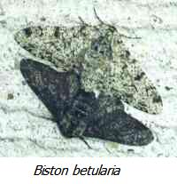La polilla inglesa, Biston betularia, es con frecuencia citada como un ejemplo observado de evolución. (Evolución: un cambio en el acervo genético) En esta polilla existen dos formas de color: claras y oscuras. H. B. D. Kettlewell encontró que las polillas oscuras constituían menos del 2% de la población anterior a 1848. La frecuencia de la forma oscura se incrementó en los años siguientes. Para 1898, el 95 % de las polillas en Manchester y otras zonas altamente industrializadas eran de la forma oscura. Su frecuencia fue menor en las áreas rurales. La población de polillas cambió de una mayoría de claras a una mayoría de oscuras. El color de las polillas está primariamente determinado por un simple gen (gen: una unidad hereditaria) Así pues, el cambio en la frecuencia de polillas oscuras representó un cambio en el acervo genético. (Acervo genético: Conjunto de todos los genes de una población) Este cambio fue, por definición, evolución.
El incremento en la abundancia relativa del tipo oscuro fue debido a la selección natural. La parte final del siglo XIX fue el tiempo de la revolución industrial en Inglaterra. El hollín de las fábricas oscureció los árboles de abedul en los que las polillas se posaban. En contraste con una superficie ennegrecida, las aves podían ver mejor las polillas de color claro y alimentarse más con ellas. Como resultado, más polillas oscuras sobrevivieron hasta la edad reproductiva y dejaron descendencia. El gran número de descendencia dejado por las polillas oscuras es lo que causó su incremento en la frecuencia. Este es un ejemplo de selección natural.
Las poblaciones evolucionan. (evolución: un cambio en el acervo genético) A fin de entender la evolución, es necesario ver las poblaciones como una agrupación de individuos, cada uno portando un juego de características. Un solo organismo no es representativo de la población entera a menos que no halla variación dentro de esta. Los organismos individuales no evolucionan, ellos mantienen los mismos genes durantes sus vidas. Cuando una población está evolucionando, la proporción de los diferentes tipos de genes está cambiando - cada individuo dentro de la población no cambia. Por ejemplo, en el caso previo, el incremento de las polillas oscuras; las polillas no se tornaron de claras a grises y luego oscuras a la vez. El proceso de evolución puede resumirse en tres sentencias: Los genes mutan. (gen: una unidad heredable) Los individuos son seleccionados. Las poblaciones evolucionan.
La evolución puede dividirse en microevolución y macroevolución. El tipo de evolución documentado anteriormente es microevolución. Los cambios grandes, como cuando una especie se forma, son llamados macroevolución. Algunos biólogos sienten que los mecanismos de la macroevolución son diferentes de aquellos del cambio microevolutivo. Otros piensan que la distinción entre los dos es arbitraria - macroevolución es microevolución acumulada.
La palabra evolución tiene una variedad de significados. El hecho que todos los organismos estén unidos por un ancestro común es con frecuencia llamado evolución. La teoría de cómo apareció el primer organismo es con frecuencia llamada evolución. Esta debería llamarse abiogénesis. Y frecuentemente la gente usa la palabra evolución cuando realmente se están refiriendo a la selección natural - uno de los muchos mecanismos de la evolución.
Errores comunes sobre la evolución
La evolución puede ocurrir sin cambio morfológico; y el cambio morfológico puede ocurrir sin evolución. Los humanos son más grandes ahora que en un pasado reciente, resultado de una mejor dieta y las medicinas. Los cambios fenotípicos, como éste, inducidos únicamente por cambios en el ambiente no cuentan como evolución porque estos cambios no son hereditarios; en otras palabras, el cambio no pasó a la descendencia. El fenotipo son las propiedades morfológicas, fisiológicas, bioquímicas y comportamentales, entre otras, exhibidas por un organismo. El fenotipo de un organismo está determinado por los genes y su ambiente. La mayoría de los cambios debidos al ambiente son bastante sutiles, por ejemplo las diferencias en talla. Si una gran escala de cambios fenotípicos se debe a cambios genéticos, entonces es evolución.
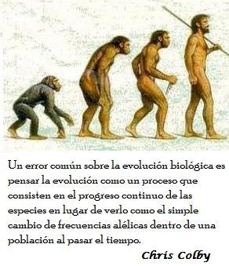Evolución no es progreso. Las poblaciones simplemente se adaptan al ambiente circundante. Estas necesariamente no llegan a ser mejores con el tiempo en ningún sentido absoluto. Una característica o estrategia que es exitosa en un momento dado puede resultar inapropiada en otro. Paquin y Adams demostraron esto experimentalmente. Ellos establecieron un cultivo de levaduras y lo mantuvieron por muchas generaciones. Ocasionalmente podía originarse una mutación que permitía a su portador reproducirse mejor que sus contemporáneas. Estas cepas mutantes podían desplazar a las cepas anteriormente dominantes. En diferentes momentos se tomaron muestras de las cepas más exitosas de cada cultivo. En experimentos posteriores de competición cada cepa podía desplazar al tipo dominante inmediatamente previo en el cultivo. Sin embargo, algunas cepas aisladas inicialmente podían desplazar a cepas que se aislaron tardíamente en el experimento. Las habilidades competitivas de las cepas fueron siempre mejores que la de los tipos previos, pero la competitividad en sentido general no se incremento. Cualquier éxito de un organismo depende del comportamiento de sus contemporáneos. Para la mayoría de las características o comportamientos no es probable que ésta sea la estrategia o el diseño óptimo, únicamente uno contingente. La evolución puede parecerse a un juego de piedra/papel o tijera.
Los organismos no son blancos pasivos de su ambiente. Cada especie modifica su propio ambiente. Al menos, los organismos remueven nutrientes de sus alrededores y les adicionan desechos. Con frecuencia los desechos benefician a otras especies. El estiércol de los animales es fertilizante para las plantas. Por otra parte, el oxígeno que nosotros respiramos es un producto de desecho de las plantas. Las especies simplemente no cambian a propósito su ambiente; ellas modifican sus ambientes permitiéndoles acomodarse. Los castores construyen presas que les permite crear un estanque adecuado para ellos y para levantar su descendencia. Por otra parte, cuando el ambiente cambia, las especies pueden migrar a climas confortables o buscar microambientes a los cuales están adaptadas.
Variación genética
La evolución requiere variación genética. Si no hubiese habido polillas oscuras, la población no podría haber evolucionado de una mayoría clara a una mayoría oscura. A fin que la evolución continué deben existir mecanismos que incrementen o creen la variación genética y mecanismos que la disminuyan. La mutación es el cambio en un gen. Estos cambios son la fuente de la nueva variación genética. La Selección natural opera sobre esta variación.
La variación genética tiene dos componentes: la diversidad alélica y la asociación no aleatoria de los alelos. Los alelos son las diferentes versiones de un mismo gen. Por ejemplo, los humanos pueden tener los alelos A, B u O que determinan un aspectos de sus tipos de sangre. La mayoría de los animales, incluyendo los humanos, son diploides - estos contienen dos alelos de cada gen en cada locus, uno heredado de su madre y el otro heredado de su padre. Un locus es localización de un gen en un cromosoma. Los humanos pueden ser AA, AB, AO, BB, BO u OO en el locus para grupo de sangre. Si estos dos alelos que están en un locus son del mismo tipo (por ejemplo dos alelos A) el individuo se denominará homocigótico. Un individuo con dos alelos diferentes en un locus (por ejemplo, un individuo AB) se denominará heterocigótico. En cualquier locus puede haber diferentes alelos en una población, más alelos de los que puede poseer un simple organismo. Por ejemplo ningún humano puede poseer un alelo A, uno B y uno O.
En las poblaciones naturales está presente una considerable variación. Un 45% de los loci (plural de locus) en plantas tienen más de un alelo en el acervo genético alelo: diferentes versiones de un gen (creado por mutación)] Es probable que un planta dada sea heterocigótica para cerca del 15% de sus loci. Los niveles de variación genética en los animales tienen un rango desde aproximadamente un 15% de loci que tienen más de un alelo (polimórfico) en aves, a cerca de un 50 % de loci que son polimórficos en insectos. Los mamíferos y los reptiles son polimórficos para cerca de un 20% de sus loci - los anfibios y los peces son polimórficos en cerca de un 30%. En la mayoría de las poblaciones hay suficientes loci y suficientes alelos diferentes que cada individuo tiene una combinación única de alelos -exceptuando los gemelos.
El desequilibrio de ligamiento es una medida de la asociación de dos alelos de dos genes diferentes. [alelo: diferentes versiones de un gen] Si estos dos alelos se encuentran juntos en los organismos con mayor frecuencia de lo que se podría esperar, los alelos están en desequilibrio de ligamiento. Si hay dos loci en organismo (A y B) y dos alelos en estos loci (A1, A2, B1 y B2) el desequilibrio de ligamiento (D) se calcula como D = f (A1A2) * f (A2B2) - f (A1B2) * f (A2B1) (donde f(X) es la frecuencia de X en la población). [Loci (plural de locus): Ubicación de un gen en un cromosoma] D varía entre - ¼ y ¼; cuanto mayor es la desviación desde cero, mayor es el ligamiento. El signo es simplemente una consecuencia de cómo están numerados los alelos. El desequilibrio de ligamiento puede ser resultado de la proximidad física de los genes. O esta puede mantenerse por la selección natural si alguna de estas combinaciones de alelos trabaja mejor como equipo.
La selección natural mantiene el desequilibrio de ligamiento entre los alelos de color y patrón en Papillo memnon. [Desequilibrio de ligamiento: asociación entre alelos de diferente loci] En ésta especie de polilla hay un gen que determina la morfología del ala. Un alelo de este locus hace que la polilla tenga una cola; el otro alelo codifica para una polilla sin cola. Hay otros genes que determinan si las alas son brillantes u oscuras. Hay por lo tanto cuatro tipos posibles de polillas: polillas brillantemente coloreadas con o sin cola y polillas oscuras con y sin cola. Todas las cuatro pueden producirse cuando están en laboratorio y pueden reproducirse. Sin embargo, solo dos de estos tipos de polillas se encuentran en estado silvestre: Brillantes con cola y oscuras sin cola. La asociación no aleatoria es mantenida por la selección natural. Las polillas brillantes y con cola mimetizan el patrón de una especie no comestible. La forma oscura es críptica. Las otras dos combinaciones no son ni miméticas ni crípticas y son fácilmente devoradas por los pájaros.

El apareamiento selectivo causa una distribución no aleatoria de los alelos en un locus. [Locus: Ubicación de un gen en un cromosoma] Si hay dos alelos (A y a) en un locus con una frecuencia p y q, la frecuencia de estos tres posibles genotipos (AA, Aa y aa) será p2, 2pq y q2 , respectivamente. Por ejemplo, si la frecuencia de A es 0.9 y la frecuencia de a es 0.1, las frecuencias de los individuos AA, Aa y aa son: 0.81, 0.18 y 0.01. Esta distribución se llama el equilibrio de Hardy- Weinberg.
El apareamiento no aleatorio da como resultado una desviación de la distribución de Hardy-Weinberg. Los humanos se aparean selectivamente de acuerdo con la raza; es más probable que nos casemos con alguien de nuestra raza que con alguien de otra. En las poblaciones que se aparean de esta forma, se encuentran pocos heterocigóticos predecibles de un apareamiento aleatorio. [heterocigoto: un organismo que tiene dos alelos diferentes en un locus] Un decrecimiento de los heterocigóticos puede resultar de la elección de pareja, o simplemente de una subdivisión de la población. La mayoría de los organismos tienen una capacidad de dispersión limitada, por lo que deben escoger pareja en una población local.
Evolución dentro de un linaje
A fin de permitir la evolución debe haber mecanismos que permitan incrementar o disminuir la variación genética. Los mecanismos de la evolución son la mutación, la selección natural, la deriva genética, la recombinación y el flujo de genes. He agrupado estos mecanismos en dos grupos -los que incrementan la variación genética y los que la disminuyen.
Mecanismos que disminuyen la variación genética
Selección Natural
Algunos tipos de organismos dentro de una población dejan más descendencia que otros. Con el tiempo, la frecuencia de los más prolíficos se incrementará. La diferencia en la capacidad reproductiva se denomina selección natural. La selección natural es el único mecanismo adaptativo de evolución; este se define como la exitosa reproducción diferencial de clases genéticas variantes preexistentes en el acervo genético.
La acción más común de la selección natural es la de remover las variantes ineptas que se han producido por mutación. (Selección natural: exitosa reproducción diferencial de genotipos) En otras palabras, la selección natural usualmente evita que nuevos alelos incrementen su frecuencia. Esto condujo a un famoso evolucionista, George Williams, a decir “La evolución continúa a pesar de la selección natural.”
La selección natural puede mantener o agotar la variación genética según como actúe. Cuando la selección actúa para eliminar los alelos perjudiciales, o hace que un alelo alcance la fijación, está disminuyendo la variabilidad genética. Sin embargo, cuando los heterocigóticos son más aptos que los homocigóticos, entonces la variación genética es mantenida por la selección natural. (Heterocigótico: Un organismo que tiene dos alelos diferentes en un locus / Homocigótico: Un organismo que tiene dos alelos similares en un locus) Este tipo de selección se denomina selección equilibradora. Un ejemplo de esta es el mantenimiento de los alelos para células falciformes en las poblaciones humanas sujetas a la malaria. La variación de un simple locus determina si un glóbulo rojo tiene la forma normal o si es falciforme. Si un humano tiene dos alelos para células falciformes entonces el/ella desarrollaran anemia - la forma de hoz de las células impide transportar niveles normales de oxígeno. Sin embargo, los heterocigóticos tienen una copia del alelo de células falciformes, junto con uno normal gozan de alguna resistencia a la malaria - la forma de hoz en las células dificulta que el Plasmodium (agente causante de la malaria) entre en ellas. Por esto, los individuos homocigóticos para alelos normales sufren más malaria que los heterocigóticos. Los individuos homocigóticos para células falciformes son anémicos. Los heterocigóticos tienen el mayor éxito de los tres tipos. Los heterocigóticos pasan tanto los alelos para células normales y falciformes a la siguiente generación. Entonces, ningún alelo puede ser eliminado del pool de genes. Los alelos para células falciformes se encuentran con mayor frecuencia en regiones de África donde la malaria es más persistente.

La selección equilibradora es rara en las poblaciones naturales. (selección equilibradora: selección que favorece a los heterocigóticos) Solo se han encontrado un puñado de casos aparte del ejemplo de las células falciformes. En un tiempo los genetistas de poblaciones pensaron que la selección equilibradora podría ser una explicación general de los niveles de variación genética encontrados en las poblaciones naturales. Este ya no es el caso. La selección equilibradora es solo encontrada raramente en las poblaciones naturales. Y, hay razones teóricas de porque la selección natural no puede mantener los polimorfismos en muchos loci vía selección equilibradora.
Los individuos son seleccionados. El ejemplo que di al inicio es típico de evolución por selección natural (Selección natural: reproducción diferencial de genotipos exitosos) Las polillas oscuras tenían un éxito reproductivo alto porque las polillas claras sufrieron una alta tasa de predación. La disminución de los alelos para color claro fue causada porque los individuos claros estaban siendo removidos del acervo genético (seleccionados en contra). Los organismos individuales, se reproducen o no, y por tanto son la unidad de la selección. Una vía por la que los alelos pueden cambiar en frecuencia es estar alojados en organismos con diferentes tasas reproductivas. Los genes no son las unidades de la selección (porque su éxito depende también de los otros genes del organismo); tampoco los grupos de organismos son la unidad de selección. Hay algunas excepciones a esta “regla”, pero es una buena generalización.
Los organismos no llevan a cabo comportamientos por el bien de su especie. Un organismo compite primariamente con otros de se propia especie por el éxito reproductivo. La selección natural favorece el comportamiento egoísta porque un acto verdaderamente altruista incrementaría el éxito reproductivo de quien recibe el acto y diminuiría el éxito de quien lo ofrece. Los altruistas podrían desaparecer de la población mientras que los no altruistas pudiesen cosechar los beneficios pero sin pagar los costos de los actos altruistas. Muchos comportamientos parecen altruistas. Los biólogos, sin embargo, pueden demostrar que estos comportamientos son solo aparentemente altruistas. La cooperación con otros organismos es con frecuencia la estrategia más egoísta para un animal. Esto recibe el nombre de altruismo reciproco. Un buen ejemplo de esto es el compartimiento de la sangre en los vampiros. En estos murciélagos, aquellos lo suficiente afortunados para encontrar una comida con frecuencia compartirán parte de esta con un desafortunado murciélago por medio de la regurgitación en la boca del otro murciélago. Los biólogos han encontrado que estos murciélagos forman vínculos con sus compañeros y se ayudan unos a otros cuando el otro está necesitado. Cuando un murciélago es encontrado siendo un “tramposo” (él acepta sangre de sus compañeros cuando tiene hambre pero no ayuda a sus compañeros hambrientos) sus compañeros lo abandonarán. Los murciélagos no se están ayudando unos a otros altruistamente; ellos forman pactos que son mutuamente beneficiosos.
La ayuda entre organismos estrechamente relacionados puede parecer altruismo; pero este es también un comportamiento egoísta: El éxito reproductivo (el “fitness” o adaptación) tiene dos componentes; la adaptación directa y la adaptación indirecta. La adaptación directa es una medida de cuantos alelos, en promedio, un genotipo contribuye al pool de genes de la generación subsiguiente por medio de la reproducción. La adaptación indirecta es una medida de cuantos alelos idénticos a los propios ayudan a entrar en el acervo genético. La adaptación directa sumada a la adaptación indirecta da la adaptación inclusiva. J. B. S. Haldane alguna vez mencionó que podría ahogarse a gusto por salvar dos hijos u ocho primos. Cada uno de sus hijos podría portar la mitad de sus alelos; sus primos una octava parte. Ellos podrían potencialmente adicionar muchos de sus alelos al acervo genético tanto como él pudiesen.
La selección natural favorece los rasgos o comportamientos que incrementan la adaptación inclusiva de un genotipo. Los organismos estrechamente emparentados portan muchos de los mismos alelos. En las especies diploides, los hermanos portan en promedio como mínimo el 50% de sus alelos. El porcentaje es alto si los padres están emparentados. Así, la ayuda a los parientes cercanos para que se reproduzcan hace que los genes propios de un organismo obtengan una mejor representación en el acervo genético. El beneficio o ayuda a los parientes se incrementa dramáticamente en las especies con fecundación cruzada. En algunos casos los organismos pierden completamente su reproducción y únicamente ayudan a sus parientes a reproducirse. Las hormigas, y otros insectos eusociales tienen castas estériles que sólo sirven para asistir a la reina en sus esfuerzos reproductivos. Las trabajadoras estériles se están reproduciendo por medio de una sustituta.
Las palabras egoísta y altruista tienen connotaciones hoy en día en uso que los biólogos no pretenden. Egoísta simplemente significa comportarse de una manera en la cual su adaptación inclusiva se ve maximizada; altruista significa comportarse de una manera que la adaptación inclusiva de otro organismo se ve aumentada a expensas de la propia. El uso de las palabras egoísta y altruista no significa que los organismos concientemente comprendan sus motivos.
La ocasión de la selección natural para operar no induce, por si misma, la aparición de la variación genética - la selección solo distingue entre las variaciones existentes. La variación no es posible a lo largo de cada eje imaginable, así que no todas las posibles soluciones adaptativas están abiertas a las poblaciones. Para poner un ejemplo algo ridículo, una capazón de acero para una tortuga sería una ventaja sobre los caparazones regulares. Las tortugas que son atropelladas por autos quedan hechas pedazos ya que éstas cuando se ven enfrentadas a un peligro se retraen dentro de sus caparazones - está no es una gran estrategia contra un automóvil de dos toneladas. Sin embargo, no hay variación en el contenido de metal del caparazón, por lo cual no se podría facilitar la selección de un caparazón de acero.
Hay un segundo ejemplo de selección natural. Geospiza fortis vive en las islas Galápagos junto con otras catorce especies de pinzones. Esta especie se alimenta de las semillas de la planta Tríbulus cistoides, especializándose en semillas pequeñas. Otras especies, G. magnirostris, tiene un largo pico y está especializada en semillas grandes. La salud de las poblaciones de estas aves depende de la producción de semillas. A su vez, la producción de semillas depende de la llegada de la estación lluviosa. En 1977 ocurrió una sequía. Las lluvias fueron más bajas de lo normal y se produjeron pocas semillas. Mientras la estación progresaba las poblaciones de G. fortis agotaron los suministros de semillas pequeñas. Eventualmente solo quedaron semillas grandes. La mayoría de los pinzones se murieron de hambre; la población cayó de doce centenas de aves a menos de doscientos. Peter Grant, quien había estudiado aquellos pinzones, notó que aquellos que tenían picos grandes la pasaban mejor que los de picos pequeños. Aquellos con picos grandes dejaban más descendencia con el correspondiente pico grande. Así se fue incrementando en proporción el tamaño del pico en la población de la siguiente generación. Para demostrar que el cambio en el tamaño del pico en Geospiza fortis fue un cambio evolutivo, Grant tuvo que mostrar que as diferencias en el tamaño del pico fueron, al menos, parcialmente basadas en la genética. Lo hizo cruzando pinzones de varios tamaños de picos y mostrando que el tamaño del pico fue influenciado por los genes de sus padres. Las aves de pico grande tenían descendencia con el pico grande; el tamaño del pico no se debía a diferencias ambientales (en el cuidado parental, por ejemplo).
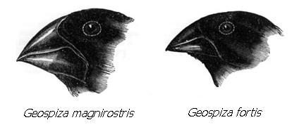La selección natural puede no conducir a una población a tener el conjunto óptimo de características. En una población podría existir ciertas combinaciones posibles de alelos que permitirían producir el conjunto óptimo de características (el óptimo global); pero hay otros conjuntos de alelos que podrían producir una población casi adaptada (óptimo local). La transición entre un óptimo local y un óptimo global podría verse obstruido o vedado porque la población tendría que pasar por estados menos adaptativos para hacer la transición. La selección natural solo trabaja para llevar a la población al punto óptimo más cercano. Esta idea es el paisaje adaptativo de Sewall Wright. Esta es uno de los modelos que más ha influido en la forma como los biólogos evolutivos ven la evolución.
La selección natural no tiene previsión alguna. Esta solo permite que a los organismos adaptarse a sus ambientes circundantes. Las estructuras o los comportamientos no evolucionan para futuros utilidades. Un organismo se adapta a su ambiente en cada etapa de su evolución. Al cambiar el entorno, pueden seleccionarse nuevos caracteres. Los cambios grandes en las poblaciones son el resultado de selección natural acumulada. Los cambios son introducidos en la población por mutación; pero la pequeña parte de estos cambios, que resultan ser útiles para el rendimiento reproductivo de sus portadores, se ve amplificada en frecuencia por la selección.
Las características complejas deben evolucionar a través de intermediarios viables. Para muchas características inicialmente parece inverosímil que el intermediario pudiese ser viable. ¿Qué tan buena es media ala? Media ala puede no ser buena para volar, pero podría ser buena para otros fines. Se piensa que las plumas evolucionaron como aislamiento térmico (¿alguna vez ha usado un abrigo de plumas?) y/o como una trampa para insectos. Luego, las aves podrían haber aprendido a deslizarse cuando saltaban de árbol en árbol. Eventualmente las plumas que originalmente sirvieron como aislamiento ahora llegaron a estar co-adaptadas para su uso en el vuelo. La utilidad actual de una característica no es siempre indicativa de su utilidad pasada. Esta puede evolucionar permitiendo un propósito, y ser usada más tarde para otro. Una característica que evolucionó permitiendo su actividad actual es una adaptación; una que evolucionó permitiendo otra utilidad es una exaptación. Un ejemplo de exaptación es el ala de los pingüinos. Los pingüinos evolucionaron desde ancestros voladores; ahora son aves no voladoras que usan sus alas para nadar.

Errores comunes sobre la Selección
La selección no es una fuerza en el sentido que lo son la fuerza de la gravedad o la fuerza nuclear fuerte. Sin embargo, en aras de la brevedad, algunos biólogos se refieren de esta forma. Esto con frecuencia lleva a confusión cuando los biólogos hablan de “presiones” selectivas. Esta expresión insinúa que el ambiente “empuja” a la población a un estado más adaptado. Este no es el caso. La selección solamente favorece los cambios genéticos benéficos cuado estos ocurren al azar -ésta no contribuye a su aparición. El potencial para actuar de la selección puede preceder con mucho a la aparición de la variabilidad genética seleccionable. Cuando se habla de selección como una fuerza, parece como si esta tuviese una mente propia; o si fuera la naturaleza personificada. Esto frecuentemente ocurre cuando los biólogos se ponen cuando hablan respecto a la selección natural. Tal cosa no tiene lugar en las discusiones científicas sobre evolución. La selección natural no es una entidad guiada o cognosciente; es simplemente un efecto.
Una falla relacionada con las discusiones sobre la selección es antropomorfizar a los seres vivos. A menudo parece imputárseles motivos conscientes a los organismos, incluso a los genes, cuando se discute sobre evolución. Esto sucede con mayor frecuencia cuando se discute sobre el comportamiento animal. Con frecuencia se dice que los animales adquieren un tipo de comportamiento porque la selección lo favorecerá. Esto se puede expresar de forma más precisa: “Los animales que, debido a su composición genética, tienen este comportamiento, tienden a ser favorecidos por la selección natural en relación con aquéllos que, debido a su composición genética, no lo poseen”. Esta frase es algo engorrosa. Para evitarla, los biólogos antropomorfizan con frecuencia. Esto es desafortunado, porque muchas veces hace que los argumentos evolutivos suenen fatuos. Tenga en mente que esto sólo es por conveniencia a la hora de expresarse.
La frase “supervivencia del más apto” se utiliza a menudo como sinónimo de selección natural. La frase es incompleta y falaz. Para empezar, la supervivencia es sólo un componente de la selección — y quizá uno de los menos importantes, en muchas poblaciones. Por ejemplo, en las especies poliginias, muchos machos sobreviven hasta la edad reproductiva, pero sólo unos pocos llegan a aparearse. Los machos pueden diferir poco en su habilidad para sobrevivir, pero mucho en su habilidad para atraer parejas — la diferencia en el éxito reproductivo depende principalmente de esta última consideración. Además, la palabra apto es con frecuencia confundida con estar físicamente apto. La aptitud, en el sentido evolutivo, es la eficacia reproductiva media de una clase de variantes genéticas en un acervo genético. Apto no significa necesariamente más grande, más rápido o más fuerte.
N. del T.: En inglés la palabra “fit” no solo significa “ser apto” o “estar adaptado”, sino que también significa “estar en buenas condiciones físicas”
Selección Sexual
En muchas especies, los machos desarrollan características sexuales secundarias prominentes. Algunos ejemplos citados con frecuencia son la cola del pavo real, los colores y patrones en los machos de las aves en general, los “cantos” de las ranas y los destellos de las luciérnagas. Muchos de estos rasgos son un riesgo desde el punto de vista de la supervivencia. Cualquier característica ostentosa, o comportamiento ruidoso, pondrá en alerta a los predadores además de las potenciales parejas. Entonces, ¿cómo pudo la selección natural favorecer estos caracteres?
La selección natural puede dividirse en muchos componentes, y la supervivencia es sólo uno de ellos. El atractivo sexual es un componente muy importante de la selección, tanto que los biólogos utilizan el término selección sexual cuando hablan sobre este subconjunto de la selección natural.
La selección sexual es la selección natural operando sobre los factores que contribuyen al éxito de apareamiento de un organismo. Pueden evolucionar caracteres que son un riesgo para la supervivencia cuando el atractivo sexual de una característica pesa más que el riesgo acarreado para la supervivencia. Un macho que vive poco tiempo, pero produce mucha descendencia, tiene mucho más éxito que uno que vive mucho y produce poca. Los genes del primer macho a la postre dominarán el acervo genético de su especie. En muchas especies, especialmente en las especies poliginias donde unos pocos machos monopolizan a todas las hembras, la selección sexual ha provocado un pronunciado dimorfismo sexual. En estas especies, los machos compiten contra otros machos por las parejas. La competición puede ser directa o mediada por la elección femenina. En las especies donde las hembras eligen, los machos compiten exhibiendo características fenotípicas llamativas y/o llevando a cabo elaborados comportamientos de cortejo. Posteriormente, las hembras se aparean con los machos que más les interesan, normalmente los que tienen la presentación más estrafalaria. Hay muchas teorías que compiten por explicar por qué las hembras son atraídas por estas exhibiciones.
El modelo del buen gen establece que la exhibición indica algún componente de la aptitud del macho. Un defensor del modelo del buen gen diría que los colores brillantes de los machos de aves indican la ausencia de parásitos. Las hembras buscan alguna señal que esté correlacionada con algún otro componente de la viabilidad.
La selección del buen gen puede verse en los peces espinosos. En estos peces, los machos tienen una coloración roja en los costados. Milinski y Bakker demostraron que la intensidad del color estaba correlacionada con la cantidad de parásitos y con el atractivo sexual. Las hembras preferían a los machos más rojos. El color rojo indicaba que el macho tenía menos parásitos.
La evolución puede quedar atrapada en un círculo de retroalimentación positiva. Otro modelo para explicar las características sexuales secundarias es el modelo de la selección sexual desbocada. R. A. Fisher propuso que las hembras pueden tener una preferencia innata por algún rasgo masculino antes que aparezca en la población. Las hembras se aparearían con los machos que muestran el rasgo. La descendencia de estas parejas porta los genes tanto del rasgo masculino como de la preferencia por el rasgo. Como resultado, el proceso aumenta como una bola de nieve colina abajo, hasta que la selección natural lo detiene. Suponga que las hembras de ave prefieren a los machos que tengan las plumas de la cola más largas que la media. Los machos mutantes con plumas más largas que la media producirán más descendencia que los machos con plumas cortas. En la siguiente generación, la longitud promedio de la cola aumentará. A medida que transcurren muchas generaciones, la longitud de las plumas aumentará porque las hembras no prefieren una longitud específica de cola, sino una cola más larga que el promedio. Eventualmente, la longitud de la cola aumentará hasta el punto en el que el riesgo para la supervivencia iguale al atractivo sexual del rasgo, y se establecerá un equilibrio. Tenga en cuenta que el plumaje de los machos en muchas aves exóticas es a menudo muy llamativo y, de hecho, muchas especies tienen machos con plumas de la cola muy enlongadas. En algunos casos, estas plumas se pierden tras la época de apareamiento.
Ninguno de los modelos anteriores es mutuamente exclusivo. Hay millones de especies con dimorfismo sexual en este planeta, y las formas de selección sexual probablemente varían de unas a otras.
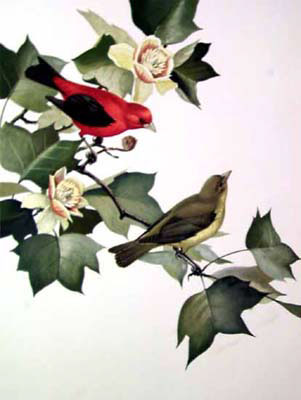N. del T. En muchas especies de aves puede verse un dimorfismo sexual que es resultado de la selección sexual. En la ilustración se puede ver al macho de la tángara escalata haciendo alusión a su nombre junto a la menos vistosa hembra.
Deriva Genética
Las frecuencias alélicas pueden cambiar debido sólo al azar. Esto se denomina deriva genética. La deriva es un error de muestreo binomial del acervo genético. Esto significa que los alelos que forman el acervo genético de la siguiente generación son solo una muestra de los alelos de la generación actual. Cuando se hace un muestreo de una población, la frecuencia de los alelos difiere ligeramente debido tan sólo al azar.
Los alelos pueden incrementar o disminuir su frecuencia debido a la deriva. El cambio medio esperado en la frecuencia de un alelo es cero, ya que aumentar o disminuir en frecuencia es igualmente probable. Un pequeño porcentaje de alelos puede cambiar en frecuencia continuamente en una dirección durante varias generaciones, de la misma manera que, a veces, al lanzar una moneda varias veces, aparecen secuencias de caras y sellos. Algunos alelos mutantes nuevos pueden llegar a la fijación mediante esta forma.
En las poblaciones pequeñas, la varianza en la tasa de cambio de las frecuencias alélicas es mayor que en las poblaciones grandes. Sin embargo, el ritmo total de la deriva genética (medido en sustituciones por generación) es independiente del tamaño de la población. [deriva genética: un cambio aleatorio en las frecuencias alélicas] Si el ritmo de mutación es constante, las poblaciones grandes y pequeñas pierden alelos debido a la deriva a la misma velocidad. Esto se debe a que las poblaciones grandes tienen más alelos en el acervo genético, pero los pierden más lentamente. Las poblaciones pequeñas tienen menos alelos, pero éstos pasan rápidamente de largo. Se asume que la mutación está añadiendo constantemente nuevos alelos al acervo genético, y que la selección no está operando en ninguno de estos alelos.
Las caídas bruscas en el tamaño de una población pueden cambiar significativamente las frecuencias alélicas. Cuando una población se hace pequeña, los alelos de la muestra superviviente pueden no ser representativos del acervo genético anterior a la caída de tamaño. Este cambio en el acervo genético se denomina efecto fundador, porque las poblaciones pequeñas de organismos que invaden un territorio nuevo (fundadores) están sujetas a éste. Muchos biólogos creen que los cambios genéticos ocasionados por los efectos fundadores pueden contribuir a que las poblaciones aisladas desarrollen un aislamiento reproductivo con respecto a sus poblaciones padres. En poblaciones suficientemente pequeñas, la deriva genética puede contrarrestar la selección. [deriva genética: un cambio aleatorio en las frecuencias alélicas] Alelos que son ligeramente deletéreos pueden ir a la deriva hacia la fijación.

Wright y Fisher no estaban de acuerdo sobre la importancia de la deriva. Fisher pensaba que las poblaciones eran bastante grandes como para poder despreciar el efecto de la deriva. Wright argumentaba que las poblaciones se dividían a menudo en subpoblaciones más pequeñas. La deriva podía causar diferencias en la frecuencia alélica entre las subpoblaciones si el flujo genético era bastante pequeño. Si una subpoblación era bastante pequeña, la población podría incluso ir a la deriva a través de valles de aptitud en el paisaje adaptativo. Luego, la subpoblación podría escalar una montaña de aptitud más grande. El flujo genético saliente de esta subpoblación podría contribuir a que toda la población se adaptara. Esta es la teoría de los equilibrios en movimiento de Wright.
Tanto la selección natural como la deriva genética disminuyen la variabilidad genética. Si fueran los únicos mecanismos de la evolución, las poblaciones acabarían haciéndose homogéneas y sería imposible más evolución. No obstante, hay mecanismos que reemplazan la variabilidad eliminada por la selección y la deriva. Éstos se discuten a continuación.
Mecanismos que incrementan la variación genética
Mutación
La maquinaria celular que copia el ADN algunas veces comete errores. Estos errores alteran la secuencia de un gen, y reciben el nombre de mutación. Hay muchos tipos de mutación. Una mutación puntual es una mutación en la cual una “letra” del código genético es cambiada por otra. Secciones de ADN pueden también ser borradas o insertadas en un gen; estas también son mutaciones. Finalmente, los genes o parte de ellos pueden llegar a invertirse o duplicarse. Las tasas de mutación típicas están entre 10-10 y 10-12 mutaciones por pares de bases en una generación de ADN.

Se piensa que la mayoría de las mutaciones son neutrales respecto a la apttitud (Kimura define neutral como |s| < 1/2Ne, donde s es el coeficiente de selección y Ne es el tamaño efectivo de la población) Solo una pequeña porción del genoma de los eucariotas contiene segmentos codificadores. Aunque algunas regiones no codificadoras de ADN están involucradas en la regulación de los genes o en otras funciones celulares, es probable que la mayoría de los cambios en las bases pudieran no tener consecuencias en la aptitud.
La mayoría de las mutaciones que tienen algún efecto fenotípico son deletéreas. Las mutaciones que resultan en substituciones de aminoácidos pueden cambiar la forma de la proteína, cambiando o eliminando potencialmente su función. Esto puede conducir a un inadecuado funcionamiento de las rutas bioquímicas o a la interferencia con los procesos de desarrollo. Los organismos están lo suficientemente integrados que la mayoría de los cambios aleatorios no producirán beneficios en el éxito reproductivo. Solamente una pequeña proporción de las mutaciones son benéficas. La tasa de mutaciones benéficas, neutrales o deletéreas es desconocida y probablemente varia con respecto al locus en cuestión y al ambiente.
Las mutaciones limita la tasa de evolución. La tasa de la evolución puede ser expresada en términos de sustitución de nucleótidos en un linaje por generación. La substitución es el reemplazo de un alelo por otro en la población. Este es un proceso en dos pasos: Primero la mutación ocurre en un individuo, creando un nuevo alelo. Después, la frecuencia de este alelo se incrementa hasta fijarse en la población. La tasa de evolución es k = 2Nvu (en diploides) donde k es el número de substituciones de nucleótidos, N es el tamaño efectivo de población, v es la tasa de mutación y u es la proporción de mutantes que eventualmente se fijan en la población.
La mutación no tiene por qué ser limitante en periodos cortos de tiempo. La tasa de evolución expresada arriba está dada como una ecuación de estado estacionario; se asume que el sistema está en equilibrio. Dados los plazos de tiempo para que un simple mutante quede fijado, no está claro si las poblaciones están en equilibrio alguna vez. Un cambio en el ambiente puede causar que alelos previamente neutrales tomen valores selectivos; en pocas palabras la evolución puede correr sobre una variación “almacenada” y entonces es independiente de la tasa de mutación. Otros mecanismos también pueden contribuir variación seleccionable. La recombinación crea nuevas combinaciones de alelos (o nuevos alelos) al unir secuencias con historias microevolutivas dentro de una población: El flujo de genes también puede proveer con variantes al acervo genético. De hecho, la última fuente de estas variantes es la mutación.
El destino de los Alelos mutantes
La mutación crea nuevos alelos. Cada nuevo alelo entra en el acervo genético como una simple copia entre muchas. La mayoría se pierden del acervo genético si el organismo que la porta falla al reproducirse, o si se reproduce pero no pasa ese alelo en particular. La suerte del mutante está compartida con el fondo genético en el que aparece. Un nuevo alelo estará inicialmente unido a otro loci en su fondo genético, aún a un loci de otro cromosoma. Si el alelo incrementa su frecuencia en la población, inicialmente estará pareado con otros alelos en aquel locus - el nuevo alelo será portado inicialmente por individuos heterocigóticos para tal locus. El cambio de este alelo siendo apareado con otro de los mismos es bajo hasta que este alcance frecuencias intermedias. Si el alelo es recesivo, este efecto podría no verse en un individuo hasta que se forme un organismo homocigótico. La eventual suerte de un alelo depende si este es neutral, deletéreo o benéfico.
Alelos neutrales
La mayoría de los alelos neutrales se pierden poco después de que aparecen. El tiempo medio (en generaciones) hasta la perdida de un alelo neutral es 2(Ne/N) ln(2N) donde N es el tamaño efectivo de población (el número de individuos que contribuyen al acervo genético de la siguiente generación) y N es el tamaño total de la población. Únicamente una pequeña proporción de alelos se fijan. La fijación es el proceso de incremento de la frecuencia de un alelo hasta llegar a uno o cerca a este valor. La probabilidad que un alelo neutral se fije en la población es igual a la de sus frecuencias. Para un nuevo mutante en una población diploide, su frecuencia es 1/2N.
Si las mutaciones son neutrales respecto a la aptitud, la tasa de substitución (k) es igual a la tasa de mutación (v). Esto no significa que cada nuevo mutante alcance la fijación. Los alelos se agregan al acervo genético por mutación a la misma tasa que estos se pierden por deriva. Los alelos neutrales que llegan a fijarse tardan en promedio 4N generaciones. Sin embargo, en un estado de equilibrio hay múltiples alelos segregándose en la población. En poblaciones pequeñas, aparecen pocas mutaciones por generación, aquellas que se fijan lo hacen relativamente rápido en comparación con las poblaciones grandes. En poblaciones grandes aparecen más mutantes por generación, pero los que se fijan tardan mucho tiempo en hacerlo. Así, la tasa de evolución neutral (en sustituciones por generación) es independiente del tamaño de la población.
La tasa de mutación determina el nivel de heterocigosidad en un locus, de acuerdo con la teoría neutral. La heterocigosidad es simplemente la proporción de la población que es heterocigótica. La heterocigosidad de equilibrio está dada por H = 4Nv/[4Nv+1] (para poblaciones diploides). H puede variar desde un número muy pequeño hasta casi uno. En las poblaciones pequeñas, H es pequeño (porque la ecuación es aproximadamente un número muy pequeño dividido por uno) En poblaciones grandes (biológicamente poco realistas) la heterocigosidad se aproxima a uno (porque la ecuación es aproximadamente un número grande dividido por si mismo). Es difícil comprobar este modelo directamente este modelo porque solo se pueden hacer estimativos de N y v para la mayor parte de las poblaciones naturales. Pero se cree que la heterocigocidad es demasiado baja para ser descrita estrictamente por un modelo neutral. Las soluciones ofrecidas por los neutralistas incluyen la hipótesis de que las poblaciones naturales pueden no estar en equilibrio.
En un estado de equilibrio debería haber pocos alelos de frecuencia intermedia y muchos de frecuencia muy baja. Esta es la distribución de Ewens - Waterson. Los nuevos alelos entran en la población en cada generación, la mayoría permanece con una baja frecuencia hasta que se pierden. Unos pocos van a la deriva hasta frecuencias intermedias, y una cantidad muy pequeña van a la deriva hasta la fijación. En Drosophila pseudoobscura, la proteína xantina deshidrogenasa (Xdh) tiene muchas variantes. En una sola población, Keith, et. Al., descubrieron que 59 de 96 proteínas eran de un tipo, otros dos tipos estaban representadas diez y nueve veces, y otros nueve tipos estaban presentes una sola vez o en números bajos.
Alelos deletéreos
Los alelos deletéreos son seleccionados en contra pero permanecen con una baja frecuencia en el acervo genética. En los diploides, un mutante recesivo deletéreo puede incrementar en frecuencia debido a la deriva genética. La selección no puede ver el alelo cuando este está enmascarado por un alelo dominante. Por esta razón permanecen muchos alelos que producen enfermedades. Las personas que los portan no sufren efectos negativos por parte del alelo. A menos que el alelo de una persona se encuentre con el de otro portador, este seguirá pasando a las siguientes generaciones. Los alelos deletéreos también permanecen en la población en una frecuencia baja debido al balance entre la mutación recurrente y la selección. Esto se denomina lastre mutacional.
Alelos beneficiosos
La mayoría de los mutantes nuevos se pierden, incluso los beneficiosos. Wright calculó que la probabilidad de fijación de un alelo beneficioso es 2s (se supone una población muy grande, un beneficio adaptativo pequeño, y que los heterocigóticos tienen una aptitud intermedia. Un beneficio de 2s produce un ritmo total de evolución: k = 4Nvs, donde v es la tasa de mutación a alelos beneficiosos). Un alelo que confiera un uno por ciento de aumento en la aptitud sólo tiene un dos por ciento de probabilidad de fijarse. La probabilidad de fijación de un tipo beneficioso de mutante se dispara con la mutación recurrente. El mutante beneficioso puede desaparecer varias veces, pero finalmente puede despegar y permanecer en una población (recuerde que incluso los mutantes deletéreos se repiten en una población).
La selección direccional reduce la variabilidad genética en el locus seleccionado, a medida que el alelo más apto se dirige hacia la fijación. Las secuencias asociadas con el alelo seleccionado también se incrementan en frecuencia debido a la correlación espuria (hitchhiking). Mientras menor sea la tasa de recombinación, mayor es el segmento de secuencia afectado por esta correlación espuria. Begun y Aquadro compararon el nivel de polimorfismo de nucleótidos dentro y entre especies con el ritmo de recombinación en un locus. Los niveles bajos de polimorfismo de nucleóticos en las especies coincidían con niveles bajos de recombinación. Esto podría explicarse mediante mecanismos moleculares si la propia recombinación fuera mutagénica. En este caso, la recombinación también estaría correlacionada con la divergencia de nucleótidos entre las especies. Pero el nivel de divergencia en la secuencia no estaba correlacionado con el ritmo de recombinación. Por tanto, infirieron que la causa era la selección. La correlación entre la recombinación y el polimorfismo de nucleótidos lleva a la conclusión de que los barridos selectivos ocurren bastante a menudo para dejar huella en el nivel de variabilidad genética de las poblaciones naturales.
Un ejemplo de mutación beneficiosa procede del mosquito Culex pipiens. En este organismo, un gen implicado en la destrucción de organofosfatos - ingredientes comunes de los insecticidas - se duplicó. La progenie del organismo con esta mutación se extendió rápidamente por la población mundial de este mosquito. Existen numerosos ejemplos de insectos que desarrollan resistencia a los productos químicos, especialmente el DDT, que antes se usaba mucho en este país. Y, lo más importante, aunque las mutaciones “buenas” suceden mucho menos frecuentemente que las “malas”, los organismos con mutaciones “buenas” prosperan, mientras que aquellos que tienen mutaciones “malas” mueren.

Si los mutantes beneficiosos aparecen con poca frecuencia, las únicas diferencias en aptitud de una población se deberán a los mutantes perjudiciales nuevos y a los perjudiciales recesivos. La selección simplemente estará eliminando las variantes menos adaptativas. Sólo ocasionalmente se extenderá por una población un alelo beneficioso. La ausencia general de grandes diferencias de aptitud segregando en las poblaciones naturales indica que los mutantes beneficiosos verdaderamente aparecen con poca frecuencia. Sin embargo, el impacto de un mutante beneficioso en el nivel de variación en un locus puede ser grande y duradero. Un locus tarda muchas generaciones en recobrar niveles apreciables de heterocigosidad tras un barrido selectivo.
Recombinación
Todo cromosoma de nuestro esperma o células huevo es una mezcla de genes de nuestra madre y de nuestro padre. La recombinación puede verse como la acción de barajar los genes. La mayoría de los organismos tienen cromosomas lineales y sus genes se sitúan en una posición específica (locus) a lo largo de estos. Las bacterias tienen cromosomas circulares. En la mayoría de los organismos con reproducción sexual, hay dos cromosomas por cada tipo de cromosoma en todas las células. Por ejemplo, en los humanos, cada cromosoma está duplicado, siendo uno de ellos heredado de la madre y el otro del padre. Cuando un organismo produce gametos, los gametos obtienen sólo una copia de cada cromosoma por célula. Se producen gametos haploides a partir de células diploides, en un proceso llamado meiosis.
En la meiosis, los cromosomas homólogos se alinean. El ADN del cromosoma se rompe en ambos cromosomas por varios sitios, y se reenlaza con la otra cadena. Luego, los dos cromosomas homólogos se reparten en dos células separadas que se dividen y forman gametos. Sin embargo, debido a la recombinación, los dos cromosomas son una mezcla de alelos de la madre y del padre.

La recombinación crea nuevas combinaciones de alelos. Alelos que surgieron en diferentes tiempos y en diferentes sitios pueden reunirse. La recombinación no sólo puede ocurrir entre los genes, sino dentro de los genes también. La recombinación dentro de un gen puede formar un nuevo alelo. La recombinación es un mecanismo de evolución, porque añade nuevos alelos y combinaciones de alelos al acervo genético.
Flujo genético
En una población pueden entrar por migración nuevos organismos desde otra población. Si se aparean en la población, pueden traer alelos nuevos al acervo genético local. Esto se llama flujo genético. En algunas especies muy emparentadas, pueden aparecer híbridos fértiles de apareamientos interespecíficos. Estos híbridos pueden servir de vectores para transportar genes de una especie a otra.
El flujo genético entre especies más alejadas ocurre con poca frecuencia. A esto se le llama transferencia horizontal. Un caso interesante de esto está relacionado con los elementos genéticos llamados elementos P. Margaret Kidwell descubrió que se transferían elementos P desde alguna especie del grupo Drosophila willistoni a la Drosophila melanogaster. Estas dos especies de moscas de la fruta están distantemente emparentadas y no forman híbridos. No obstante, sus genes se solapan. Los elementos P fueron vectorizados hacia la D. melanogaster por medio de un ácaro parásito que perjudica a ambas especies. Este ácaro perfora el exoesqueleto de las moscas y se alimenta de los “jugos”. Cuando el ácaro se alimenta, puede transferirse material, incluido ADN, de una mosca a otra. Ya que los elementos P se mueven activamente en el genoma (ellos mismos son parásitos del ADN), uno se incorporó dentro del genoma de una mosca melanogaster y posteriormente se desplegó por toda la especie. Muestras de laboratorio de melanogaster capturadas antes de 1940 no tienen elementos P. Todas las poblaciones naturales actuales los portan.

Visión general de la evolución dentro de un linaje
La evolución es un cambio en el acervo genético de una población al transcurrir el tiempo; ésta puede ocurrir debido a varios factores. Tres mecanismos añaden nuevos alelos al acervo genético: la mutación, la recombinación y el flujo genético. Dos mecanismos eliminan alelos: la deriva genética y la selección natural. La deriva elimina alelos del acervo genético de forma aleatoria. La selección elimina alelos deletéreos del acervo genético. La cantidad de variabilidad genética que se encuentra en una población es el equilibrio entre las acciones de estos mecanismos.
La selección natural también puede incrementar la frecuencia de un alelo. La selección que elimina los alelos dañinos se llama selección negativa. La selección que incrementa la frecuencia de los alelos beneficiosos se llama positiva, o a veces selección darwiniana positiva. Un nuevo alelo también puede ir a la deriva hacia una frecuencia alta. Pero ya que el cambio en frecuencia de un alelo en cada generación es aleatorio, nadie habla de deriva positiva o negativa.
Excepto en casos raros de alto flujo genético, los nuevos alelos entran en el acervo genético como una simple copia. La mayoría de los nuevos alelos adicionados al acervo genético se pierden casi inmediatamente gracias a la deriva genética o a la selección; sólo un pequeño porcentaje llega a alcanzar una frecuencia alta en la población. Aún la mayoría de los alelos moderadamente beneficiosos se pierden por la deriva cuando aparecen. Pero una mutación puede reaparecer en numerosas oportunidades.
El destino de cualquier nuevo alelo depende en gran medida del organismo en el que aparece. Este alelo estará asociado a los otros alelos cercanos durante muchas generaciones. Un alelo mutante puede aumentar su frecuencia simplemente porque esté ligado a un alelo beneficioso en un locus cercano. Esto puede ocurrir aún si el alelo mutante es perjudicial, aunque no debe ser tan perjudicial como para superar el beneficio del otro alelo. De igual forma, un alelo nuevo potencialmente beneficioso puede ser eliminado del acervo genético porque estaba ligado a alelos perjudiciales cuando apareció. A un alelo que “cabalga” sobre otro alelo beneficioso se le llama hitchhiker. Eventualmente, la recombinación llevará a los dos locus a un equilibrio de ligamiento. Pero cuanto más cercano sea el ligamiento entre los dos alelos, más tiempo durará la correlación espuria (hitchhiking).
Los efectos de la selección y la deriva genética están acoplados. La deriva se intensifica cuando las presiones selectivas aumentan. Esto se debe a que la selección incrementada (es decir, una mayor diferencia entre el éxito reproductivo entre los organismos de una población) reduce el tamaño efectivo de la población, o sea, el número de individuos que contribuyen con alelos a la siguiente generación.
La adaptación está ocasionada por la selección natural acumulada, la tamización repetida de las mutaciones por la selección natural. Los pequeños cambios, favorecidos por la selección, pueden ser la piedra angular de cambios posteriores. La suma del gran número de estos cambios es la macroevolución.
El desarrollo de la Teoría Evolutiva
La biología surgió como ciencia cuando Charles Darwin publicó “Sobre el origen de las especies”. Pero la idea de la evolución no era nueva para Darwin. Lamarck publicó una teoría de la evolución en 1809. Lamarck pensaba que las especies surgían continuamente a partir de fuentes sin vida. Estas especies eran inicialmente muy primitivas, pero con el tiempo aumentaban en complejidad debido a alguna tendencia inherente. Este tipo de evolución se denomina ortogénesis. Lamarck propuso que la aclimatación de un organismo a un ambiente podría transmitirse a su descendencia. Por ejemplo, él pensaba que las proto-jirafas alargaron sus cuellos para alcanzar las ramas más altas. Esto hacía que su descendencia naciera con cuellos más largos. Esta propuesta de mecanismo evolutivo se denomina herencia de caracteres adquiridos. Lamarck también creía que las especies nunca se extinguían, aunque podían cambiar a formas nuevas. Ahora se sabe que estas tres ideas están erradas.

Las contribuciones de Darwin incluyen la formulación de la hipótesis del patrón de descendencia común y la proposición de un mecanismo para la evolución — la selección natural. En la teoría de la selección natural de Darwin, las nuevas variantes aparecen continuamente en las poblaciones. Un pequeño porcentaje de estas variantes hacen que sus portadores produzcan más descendencia que otros. Estas variantes prosperan y reemplazan a sus competidoras menos productivas. El efecto de muchas instancias de selección haría que una especie cambiara con el tiempo.
La teoría de Darwin no estaba de acuerdo con las teorías genéticas anteriores. En los tiempos de Darwin, los biólogos eran partidarios de la teoría de la herencia mezclada — la descendencia era una media de sus padres. Si un individuo tenía un padre bajo y una madre alta, él sería de estatura media. Y así, la descendencia transmitiría genes para una descendencia de altura media. Si éste fuera el caso, las variaciones genéticas nuevas serían diluidas rápidamente en una población. No podrían acumularse como la teoría de la evolución requería. Hoy sabemos que la idea de la herencia mezclada es errada.
Darwin no supo que el verdadero modo de herencia fue descubierto durante su vida. Gregor Mendel, en sus experimentos con arvejas híbridas, demostró que los genes de una madre y un padre no se mezclan. La descendencia de unos padres altos y bajos puede ser de estatura media; pero esta descendencia porta genes para gran altura y para baja altura. Los genes permanecen distinguidos y pueden transmitirse a las siguientes generaciones. Mendel envió por correo su artículo a Darwin, pero Darwin nunca lo abrió.
Transcurrió mucho tiempo para que las ideas de Mendel fueran aceptadas. Un grupo de biólogos, denominados biometristas, pensaban que las leyes de Mendel sólo afectaban a unos pocos caracteres. La mayoría de los caracteres, afirmaban, estaban gobernados por la herencia mezclada. Mendel estudió caracteres discretos. Dos de los caracteres de sus famosos experimentos eran las semillas lisas y las semillas rugosas. Este caracter no variaba de manera continua. En otras palabras, las arvejas eran o rugosas o lisas — no se encontraban formas intermedias. Los biometristas consideraban que estos caracteres eran aberraciones. Ellos estudiaban caracteres de variación continua, como el tamaño, y creían que la mayoría de los caracteres mostraban una herencia mezclada.
Incorporando la genética a la teoría evolutiva
Los genes discretos que Mendel descubrió existirían con una cierta frecuencia en las poblaciones naturales. Los biólogos se preguntaban si estas frecuencias cambiarían, y la forma como lo harían. Muchos pensaban que las versiones más comunes de los genes aumentarían su frecuencia simplemente porque ya presentaban una frecuencia elevada.
Hardy y Weinberg demostraron independientemente que la frecuencia de un alelo no cambiaría con el tiempo debido simplemente a su rareza o porque fuese común. Su modelo hacía varias suposiciones — que todos los alelos se reproducían a la misma tasa, que el tamaño de la población era muy grande y que los alelos no cambiaban de forma. Luego, R. A. Fisher demostró que las leyes de Mendel podían explicar la existencia de caracteres continuos si la expresión de estos caracteres era debida a la acción de muchos genes. Después de esto, muchos genetistas aceptaron las leyes de Mendel como las reglas básicas de la genética. A partir de esta base, Fisher, Sewall Wright y J. B. S. Haldane fundaron el campo de la genética de poblaciones. La genética de poblaciones es un campo de la biología que procura medir y explicar los niveles de variabilidad genética de las poblaciones.
(N. del T. La recombinación genética por si misma no cambia la composición del reservorio genético. Esto lo demostraron Godfrey Hardy y Wilhelm Weinbeg utilizando cálculos matemáticos. Según el trabajo de Hardy y Weinberg una población mantendrá sus alelos con las mismas frecuencias si: a). No ocurren mutaciones, b). No ocurre inmigración o emigración (0 desplazamiento de genes), c). La población es lo suficientemente grande como para que el azar altere la frecuencia de los alelos, d). El apareamiento ocurre al azar, y e). Todos los alelos son igualemente viables, o en otras palabras no hay diferencia en el éxito reproductivo. Como las frecuencias de los alelos siempre están cambiando (es decir ocurre evolución) sabemos que los factores que llevan a esto fueron los cinco anteriormente mencionados.)
R. A. Fisher estudió el efecto de la selección natural en las poblaciones grandes. Él demostró que aún las diferencias selectivas más pequeñas entre alelos podían causar cambios apreciables en las frecuencias alélicas a lo largo del tiempo. También demostró que la tasa de cambio adaptativo en una población es proporcional a la cantidad de variabilidad genética presente. Esto se conoce como Teorema Fundamental de la Selección Natural de Fisher. Aunque se le llama teorema fundamental, no se cumple en todos los casos. El ritmo en el que la selección natural origina adaptación depende de los detalles de cómo está funcionando la selección. En algunos casos raros, la selección natural puede en realidad causar un declive de la aptitud relativa media de una población.
Sewall Wright estaba más interesado en la deriva genética. Afirmó que las poblaciones grandes se dividen a menudo en muchas subpoblaciones. En su teoría, la deriva genética jugaba un papel mucho más importante, comparado con la selección. La diferenciación entre las subpoblaciones, seguida de una migración entre ellas, podría contribuir a la aparición de adaptaciones entre las poblaciones. Wright también propuso la idea del paisaje adaptativo — una idea que es influyente hasta el momento. Su influencia permanece aunque P. A. P. Moran ha demostrado que, matemáticamente, los paisajes adaptativos no existen como Wright los imaginó. En su propuesta de paisaje adaptativo, Wright extendió los resultados de su modelo de un locus a un caso de dos locus. Pero, aunque él no lo sabía, las conclusiones generales del modelo de un locus no se extienden al caso de dos locus.
J. B. S. Haldane desarrolló muchos de los modelos matemáticos de selección natural y artificial. Demostró que la selección y la mutación pueden oponerse la una a la otra, que las mutaciones perjudiciales pueden permanecer en una población debido a la mutación recurrente. También demostró que hay un coste por la selección natural, situando un límite sobre la cantidad de sustituciones adaptativas que una población puede sufrir en un lapso de tiempo.
Durante mucho tiempo, la genética de poblaciones se desarrolló como un campo teórico. Pero, obtener los datos necesarios para probar las teorías era casi imposible. Antes de la llegada de la biología molecular, las estimaciones de la variabilidad genética sólo podían inferirse a partir de los niveles de diferencias morfológicas de las poblaciones. Lewontin y Hubby fueron los primeros en obtener una buena estimación de la variabilidad genética de una población. Utilizando la nueva técnica de electroforesis de proteínas, demostraron que el 30% de los loci en una población de Drosophila pseudoobscura eran polimórficos. También mostraron que era probable que no hubieran detectado toda la variación presente. Después de encontrar este nivel de variación, surgió la pregunta: ¿la variación era mantenida por selección natural, o simplemente era resultado de la deriva genética? Este nivel de variación era demasiado alto para que la selección equilibradora pudiera explicarlo.
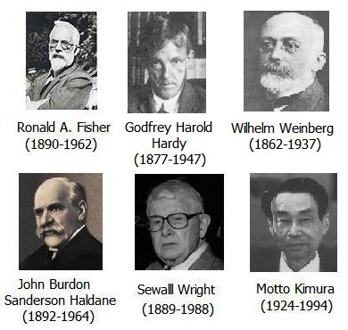Motoo Kimura teorizó que la mayor parte de la variabilidad encontrada en las poblaciones era selectivamente equivalente (neutral). Múltiples alelos de un locus diferían en sus secuencias, pero sus aptitudes eran las mismas. La teoría neutral de Kimura describía tasas de evolución y niveles de polimorfismo solamente en términos de mutación y deriva genética. La teoría neutral no negaba que la selección natural actuara sobre las poblaciones naturales; pero afirmaba que la mayoría de la variación natural eran polimorfismos transitorios de alelos neutrales. La selección no actuaba frecuentemente o con suficiente fuerza para influir en las tasas de evolución o en los niveles de polimorfismo.
Inicialmente, una gran variedad de observaciones parecían ser consistentes con la teoría neutral. Sin embargo, al final varias líneas de evidencia la echaron abajo. Hay menos variabilidad en las poblaciones naturales que la que la teoría neutral predice. Además hay demasiada variedad en las tasas de sustitución en diferentes linajes para que pueda ser explicada solo por la mutación y la deriva. Actualmente no hay una teoría matemática completa que prediga con precisión los ritmos de evolución y los niveles de heterocigosidad en las poblaciones naturales.
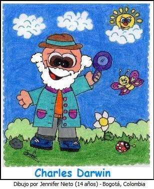Evolución entre linajes
Los patrones de la macroevolución
La evolución no es progreso. La noción popular que la evolución puede ser representada como una serie de mejoramientos desde las células simples, a través de formas de vida más complejas, hasta los humanos (el pináculo de la evolución), puede ser rastreada hasta el concepto de la escala de la naturaleza. Esta visión es incorrecta.
Todas las especies descienden de un ancestro común. A medida que el tiempo fue transcurriendo diferentes linajes de organismos fueron modificados permitiéndoles adaptarse a sus ambientes. Entonces, la evolución se ve mejor como un árbol ramificado o un arbusto, siendo las puntas de cada rama representadas frecuentemente por las especies actuales. Ningún organismo de hoy es nuestro ancestro. Cada una de las especies vivas es totalmente moderna con su propia y única historia evolutiva, al igual que nosotros. Ninguna especie existente es “una forma inferior de vida”, un paso atávico que abrió el camino a la humanidad.
Una falacia común acerca de la evolución es que los humanos evolucionaron de algunas especies actuales de simios. Este no es el caso - los humanos y los simios comparten un ancestro común. Tanto humanos como las especies actuales de simios son especies totalmente modernas; el ancestro del cual descendemos es un simio fue un simio, pero este se encuentra ahora extinto y no es igual a los simios de hoy en día. Si no fuera por la vanidad de los seres humanos nosotros podríamos ser clasificados como un simio. Nuestros parientes más cercanos son, colectivamente, los chimpancés y los chimpancés pigmeos. El siguiente pariente más cercano es el gorila.

Evidencia de la descendencia común y la Macroevolución
La microevolución puede estudiarse directamente, la macroevolución no. La macroevolución se estudia examinando los patrones en las poblaciones biológicas y en grupos de organismos relacionados e infiriendo procesos desde un patrón. Dadas las observaciones de la microevolución y el conocimiento que la Tierra tiene miles de millones de años de antigüedad - puede postularse la macroevolución. Pero esta extrapolación, por si misma no provee una explicación exigente de los patrones de la diversidad biológica que hoy vemos. La evidencia de la macroevolución, o del ancestro común y la descendencia con modificación proviene de diferentes campos de estudio. Estos incluyen: estudios comparativos de genética y bioquímica, estudios comparativos de desarrollo biológico, patrones de biogeografía, morfología y anatomía comparada y el registro fósil.
Las especies estrechamente relacionadas (determinadas por los morfólogos) tienen secuencias similares de genes. Sin embargo, toda la similitud en las secuencias no es toda la historia. Los patrones de diferencias que vemos en los genomas estrechamente relacionados están completamente examinados.
Todos los organismos usan ADN como su material genético, aunque algunos virus usan ARN. El ADN está compuesto por una serie de nucleótidos. Hay cuatro tipos de nucleótidos: adenina (A), guanina (G), citosina (C) y timina (T). Los genes son secuencias de nucleótidos que codifican para proteínas. Dentro de cada gen, cada bloque de tres nucleótidos se denomina codón. Cada codón designa un aminoácido (las subunidades de las proteínas).
Las tres letras del codón son las mismas para todos los organismos (con unas pocas excepciones). Hay 64 codones, pero solo hay 20 aminoácidos para codificar; por tal motivo la mayoría de los aminoácidos son codificados por varios codones. En muchos casos los primeros dos nucleótidos en el codón designan el aminoácido. La tercera posición puede tener uno de los cuatro nucleótidos y no afectan la forma como el código es traducido.
Un gen, cuando está en uso, se transcribe a ARN - un ácido nucleico similar al ADN (El ARN, como el ADN está hecho de nucleótidos sin embargo el nucleótido uracilo (U) se usa en reemplazo de la timina (T).) El ARN trascrito desde el gen se llama ARN mensajero. El ARN mensajero es traducido en una maquinaria celular llamada ribosomas en una cadena de aminoácidos -una proteína. Algunas proteínas funcionan como enzimas, catalíticos que aceleran las reacciones químicas en las células. Otras proteínas son estructurales o están involucradas regulando el desarrollo.

Las secuencias de genes en especies estrechamente emparentadas son muy similares. Con frecuencia el mismo codón específica un aminoácido dado en dos especies emparentadas, aún pudiendo codones alternativos cumplir la misma función. Pero existen algunas diferencias en las secuencias de genes. La mayoría de estas diferencias están en la tercera posición del codón, donde los cambios de la secuencia del ADN no alteran la secuencia de la proteína.
Hay otros sitios en el genoma donde las diferencias en los nucleótidos no tienen efecto en las secuencias proteínicas. El genoma de los eucariontes está cargado de “genes muertos” llamados pseudogenes. Los pseudogenes son copias de genes funcionales que han sido desactivados por una mutación. La mayoría de los pseudogenes no producen proteínas completas. Pueden transcribirse, pero no traducirse. O, si se traducen, sólo se produce una proteína truncada. Los pseudogenes evolucionan mucho más rápido que sus contrapartes funcionales. Las mutaciones que se producen sobre ellos no se incorporan a las proteínas, y por tanto no tienen efecto sobre la aptitud de un organismo.
Los intrones son secuencias de ADN que interrumpen un gen, pero no codifican para algo. Las porciones codificadoras de un gen se llaman exones. Los intrones se eliminan del ADN mensajero antes de la traducción, por lo que no aportan información para construir la proteína. Sin embargo, algunas veces están implicados en la regulación del gen. Al igual que los pseudogenes, los intrones (en general) evolucionan más rápidamente que las porciones codificadoras de un gen.
Las posiciones de nucleótidos que pueden cambiarse sin cambiar la secuencia de una proteína se llaman sitios silenciosos. Los sitios donde los cambios producen la sustitución de un aminoácido se llaman sitios de sustitución. Se espera que los sitios silenciosos sean más polimórficos en una población y muestren más diferencias entre poblaciones. Si bien tanto los sitios silenciosos como los de sustitución reciben el mismo número de mutaciones, la selección natural permite cambios en los sitios de sustitución infrecuentemente. Sin embargo, los sitios silenciosos no están tan coartados.
Kreitman fue el primero en demostrar que los sitios silenciosos son más variables que los sitios codificadores. Poco después de que se descubrieran los métodos de secuenciación del ADN, secuenció 11 alelos de la enzima alcohol deshidrogenasa (AdH). De los 43 sitios con nucleótidos polimórficos que halló, sólo uno producía un cambio en la secuencia de aminoácidos de la proteína.
Un sitio silencioso puede no ser enteramente neutral por completo en términos selectivos. Algunas secuencias de ADN están implicadas en la regulación de los genes, y los cambios en estos sitios pueden ser perjudiciales. Asimismo, aunque un aminoácido pueda codificarse con varios codones, un organismo puede tener un codón preferido para cada aminoácido. Esto se llama preferencia codónica.
Si dos especies comparten un ancestro común reciente, esperaría que la información genética, aún la de los nucleótidos reduntantes y la posición de los intrones o los pseudogenes, fuera similar. Ambas especies habrían heredado esta información de su ancestro común.
El grado de similaridad en la secuencia de nucleótidos es función del tiempo de divergencia. Si dos poblaciones se han separado recientemente, se habrán producido pocas diferencias entre ellas. Si se separaron hace mucho, las dos poblaciones habrán desarrollado numerosas diferencias con su ancestro común (y con la otra población). El grado de similaridad también será función de los sitios silenciosos versus los sitios de sustitución. Li y Graur, en su texto sobre evolución molecular, ofrecen los ritmos de evolución para los sitios silenciosos y los de sustitución. Los ritmos se estimaron a partir de comparaciones de secuencias de 30 genes de humanos y roedores, que divergieron hace unos 80 millones de años. Los sitios silenciosos han evolucionado a un ritmo medio de 4,61 sustituciones de nucleótido por cada 109años. Los sitios de sustitución han evolucionado mucho más lentamente, a un ritmo medio de 0,85 sustituciones de nucleótido por cada 109 años.

Los grupos de organismos emparentados son “variaciones de un mismo tema” - todos los vertebrados están construidos con el mismo juego de huesos. Los huesos de la mano humana surgen del mismo tejido que los huesos del ala de un murciélago o la aleta de una ballena; y comparten muchas características que las identifican como los puntos y crestas de inserción muscular. La única diferencia es que están hechos a distinta escala. Los biólogos evolutivos dicen que esto indica que todos los mamíferos son descendientes modificados de un ancestro común que tenía el mismo juego de huesos.
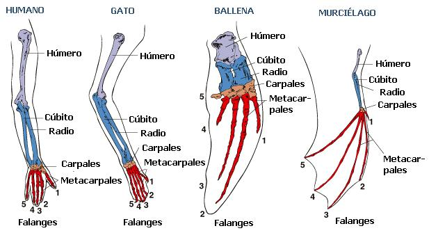Los organismos estrechamente emparentados comparten procesos de desarrollo similares. Las diferencias en el desarrollo son más evidentes al final. Al evolucionar los organismos, sus procesos de desarrollo se modifican. Una alteración cerca del final de un proceso de desarrollo tiene una menor probabilidad de ser perjudicial que un cambio temprano en el desarrollo. Los cambios tempranos pueden tener un efecto en cascada. Por esto, es de esperarse que la mayoría de los cambios evolutivos en el desarrollo tengan lugar en la fase final del desarrollo, o en aspectos tempranos del desarrollo que no tengan repercusiones posteriores. Para que un cambio temprano en el desarrollo se propague, los beneficios de una alteración temprana deben superar a las consecuencias del desarrollo posterior.
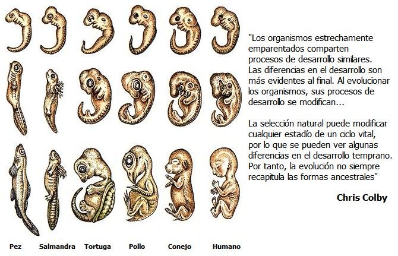Por haber evolucionado de esta forma, los organismos pasan por las fases tempranas del desarrollo que sus ancestros atravesaron hasta el punto de divergencia. Así, el desarrollo de un organismo mimetiza al de sus ancestros, aunque no lo recrea con exactitud. El desarrollo del pez plano Pleuronectes ilustra este punto. Al principio, el Pleuronectes desarrolla una cola que alcanza cierto tamaño. En la siguiente fase del desarrollo, el lóbulo superior de la cola es mayor que el lóbulo inferior (como en los tiburones). Cuando el desarrollo está completo, los lóbulos superior e inferior tienen un tamaño igual. Este patrón de desarrollo refleja las transiciones evolutivas que ha sufrido.
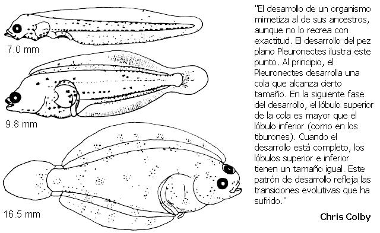La selección natural puede modificar cualquier estadío de un ciclo vital, por lo que se pueden ver algunas diferencias en el desarrollo temprano. Por tanto, la evolución no siempre recapitula las formas ancestrales — las mariposas no evolucionaron a partir de orugas ancestrales, por ejemplo. Hay diferencias en la apariencia de los embriones tempranos de los vertebrados. Los anfibios forman rápidamente una bola de células en el desarrollo temprano. Las aves, reptiles y mamíferos forman un disco. La forma del temprano embrión es resultado de las diferentes concentraciones de yema en los huevos. Los huevos de las aves y reptiles tienen mucha yema. Sus huevos se desarrollan de manera similar a los anfibios, excepto en que la yema ha deformado la forma del embrión. La bola se extiende y yace sobre la yema. Los mamíferos no tienen yema, pero aún forman un disco al principio. Esto se debe a que los mamíferos descienden de los reptiles. Los mamíferos perdieron sus huevos con yema, pero mantienen el patrón de desarrollo inicial. En todos estos vertebrados, el patrón de movimiento de las células es similar a pesar de las aparentes diferencias superficiales. Además, todos los tipos convergen rápidamente hacia una fase primitiva, similar a un pez, en unos pocos días. A partir de ahí, el desarrollo diverge.
A veces, las huellas de los ancestros de un organismo permanecen incluso cuando el desarrollo del organismo está completo. Estas se denominan estructuras vestigiales. Muchas serpientes tienen huesos pélvicos rudimentarios, conservados de sus caminantes ancestros. Vestigial no significa inútil, significa que la estructura es claramente el vestigio de una estructura heredada de un organismo ancestral. Las estructuras vestigiales pueden adquirir nuevas funciones. En los humanos, el apéndice alberga actualmente algunas células del sistema inmunitario.

Los organismos estrechamente emparentados se encuentran usualmente en proximidad geográfica; esto es especialmente cierto para los organismos que tienen limitadas oportunidades de dispersión. La fauna de mamíferos de Australia es con frecuencia citada como ejemplo de esto; los mamíferos marsupiales ocupan la mayoría de los nichos equivalentes a los que los placentarios ocupan en otros ecosistemas. Si todos los organismos descienden de un ancestro común, la distribución de las especies por el planeta debe ser función del lugar de origen, potencial de dispersión, distribución de hábitat convenientes y el tiempo desde el origen. En el caso de los mamíferos australianos, su separación física de los orígenes de los placentarios significa que los nichos potenciales fueron ocupados por una radiación marsupial en lugar de una radiación placentaria o invasión.

La selección natural sólo puede moldear la variabilidad genética disponible. Además, la selección natural no proporciona un mecanismo para la planificación anticipada. Si la selección sólo puede jugar con la variabilidad genética disponible, cabría esperar ver ejemplos de diseños improvisados en las especies vivas. Éste es el caso por cierto. En los lagartos del género Cnemodophorus, las hembras se reproducen partenogenéticamente. La fertilidad de estos lagartos aumenta cuando una hembra monta a otra hembra y simula una copulación. Estos lagartos evolucionaron a partir de lagartos sexuales cuyas hormonas se estimulaban con el comportamiento sexual. Ahora, aunque la forma de reproducción se ha perdido, el medio para excitarse (y por tanto hacerse fértil) se ha mantenido.
Los fósiles muestran estructuras duras de organismos cada vez menos similares a los organismos modernos, en rocas progresivamente más antiguas. Además, los patrones biogeográficos pueden aplicarse a los fósiles al igual que en los organismos actuales. Combinados con la tectónica de placas, los fósiles proporcionan evidencias de la distribución y dispersión de las especies antiguas. Por ejemplo, Sudamérica tenía una fauna de mamíferos marsupiales muy distinta, hasta que se formó un puente de tierra entre Norteamérica y Sudamérica. Después de esto, los marsupiales comenzaron a desaparecer y los placentarios ocuparon su lugar. Normalmente se interpreta esto como que los placentarios destruyeron a los marsupiales, pero puede que sea una simplificar demasiado.
Se han encontrado fósiles de transición entre grupos. Una de las series de fósiles en transición más impresionantes es la transición de los reptiles antiguos hasta los mamíferos modernos. Los mamíferos y los reptiles difieren en detalles del esqueleto, especialmente en sus cráneos. Las mandíbulas de los reptiles tienen cuatro huesos. El delantero se llama dentario. En los mamíferos, el hueso dentario es el único hueso de la mandíbula inferior. Los otros huesos son parte del oído medio. Los reptiles tienen una mandíbula débil y una mordedura de dientes sin diferenciar. Su mandíbula se cierra por tres músculos: los abductores externo, posterior e interno. Todos los dientes de un reptil tienen una sola cúspide. Los mamíferos tienen mandíbulas poderosas con dientes diferenciados. Muchos de estos dientes, como los molares, tienen múltiples cúspides. Los músculos temporal y masetero, derivados del abductor externo, cierran la mandíbula de los mamíferos. Los mamíferos tienen un paladar secundario, una estructura ósea que separa las vías respiratorias de la garganta, por lo que la mayoría pueden tragar y respirar simultáneamente. Los reptiles carecen de esto.

La evolución de estas características se puede observar en una serie de fósiles. Procynosuchus muestra un incremento en el tamaño del hueso dentario y los comienzos de un paladar. Thrinaxodon tiene un número reducido de incisivos, un precursor de la diferenciación dental. Cynognathus (un carnívoro parecido a un perro) muestra un mayor incremento del tamaño del hueso dentario. Los otros tres huesos están situados dentro de la porción posterior de la mandíbula. Algunos dientes tienen varias cúspides y los dientes encajan ajustadamente. Diademodon (un herbívoro) muestra un grado más avanzado de oclusión (que los dientes encajen ajustadamente). Probelesodon desarrolló una articulación doble en la mandíbula. La mandíbula podía girar sobre dos puntos con respecto al cráneo. El eje anterior era probablemente el verdadero eje, mientras que el eje posterior era una guía de alineación. El movimiento hacia delante de una de las bisagras permitía al precursor del músculo masetero moderno anclarse en una zona más adelantada de la mandíbula. Esto posibilitaba una mordedura más poderosa. El primer mamífero verdadero fue Morganucodon, un animal similar a un roedor insectívoro del Triásico tardío. Tenía todos los caracteres comunes de los mamíferos modernos. Estas especies no pertenecían a un linaje individual sin ramificar. Cada una de ellas es un ejemplo de un grupo de organismos situado junto a la línea principal de la ascendencia mamífera.
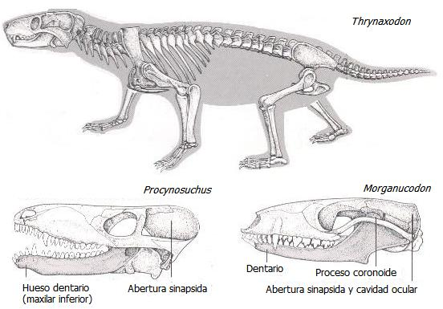La evidencia más poderosa de la macroevolución procede del hecho de que los conjuntos de caracteres de las entidades biológicas encajan en un patrón de anidamiento. Por ejemplo, las plantas pueden dividirse en dos grandes categorías, las no vasculares (Ej. los musgos) y las vasculares. Las plantas vasculares pueden dividirse en plantas sin semilla (Ej. los helechos) y las plantas con semilla. Las plantas vasculares con semilla pueden dividirse en gimnospermas (Ej. los pinos) y las plantas con flor (angiospermas). Las angiospermas pueden dividirse en monocotiledóneas y dicotiledóneas. Todos estos tipos de plantas tienen varias características que las distinguen de las otras plantas. Las características no se mezclan sino que aparecen juntas en los grupos de organismos. Por ejemplo, sólo se ven flores en plantas que poseen otros caracteres que las distinguen como angiospermas. Este es el patrón esperado de una descendencia común. Todas las especies de un grupo compartirán caracteres que heredaron de su antepasado común. Pero cada subgrupo habrá evolucionado con caracteres únicos propios. Las similitudes crean grupos. Las diferencias muestran cómo se subdividen.
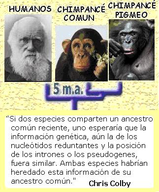La verdadera prueba de una teoría científica es su habilidad para generar predicciones comprobables y, por supuesto, que las predicciones sean comprobadas. La evolución cumple fácilmente este criterio. En varios de los ejemplos que he puesto arriba, los organismos estrechamente emparentados comparten X. Si defino estrechamente emparentado por el hecho de compartir X, estoy haciendo una afirmación vacía. Sin embargo, lo que hace es proporcionar una predicción. Si dos organismos comparten una anatomía similar, uno podría predecir que sus secuencias genéticas tendrían que ser más parecidas que con un organismo morfológicamente distinto. Esto ha sido espectacularmente confirmado por la reciente plétora de secuencias genéticas — la correspondencia con los árboles dibujados por los datos morfológicos es muy alta. Las discrepancias nunca son demasiado grandes y normalmente están confinadas a casos en los que el patrón de relación estaba en debate.

Los mecanismos de la macroevolución
A continuación se tratan los mecanismos de la evolución por encima del nivel de especies.
Especiación. Aumentando la diversidad biológica
La especiación es el proceso por el que una especie individual se transforma en dos o más especies. Muchos biólogos piensan que la especiación es la clave para entender la evolución. Algunos biólogos argumentan que ciertos fenómenos evolutivos sólo se aplican a la especiación y que el cambio macroevolutivo no puede ocurrir sin especiación. Otros biólogos creen que puede haber cambio evolutivo grande sin especiación. Los cambios entre linajes sólo son una extensión de los cambios dentro de cada linaje. En general, los paleontólogos caen en la primera categoría y los genetistas en la segunda.
Modos de especiación
Los biólogos reconocen dos tipos de especiación: alopátrica y simpátrica. Las dos se diferencian en la distribución geográfica de las poblaciones en cuestión. Se piensa que la especiación alopátrica es la forma más común de especiación. Sucede cuando una población se divide en dos (o más) subdivisiones aisladas geográficamente que los organismos no pueden superar. Al final, los acervos genéticos de las dos poblaciones cambian independientemente, hasta el punto en el que no pueden reproducirse entre ellas, aunque vuelvan a unirse de nuevo. En otras palabras, se han especiado.
La especiación simpátrica sucede cuando dos subpoblaciones quedan aisladas reproductivamente sin quedar antes aisladas geográficamente. Los insectos que viven en una sola planta huésped proporcionan un modelo de especiación simpátrica. Si un grupo de insectos se cambia de planta huésped, no se reproducirán con otros miembros de su especie que todavía vivan en su anterior planta huésped. Las dos subpoblaciones pueden divergir y especiarse. Los registros agrarios muestran que un linaje de la mosca de la manzana Rhagolettis pomenella comenzó a infestar las manzanas en la década de 1860. Anteriormente sólo habían infestado las frutas del espino albar. Feder, Chilcote y Bush han demostrado que dos razas de la Rhagolettis pomenella se han aislado comportamentalmente. Las frecuencias alélicas de seis locus (aconitasa 2, enzima málica, manosa fosfato isomerasa, aspartato aminotransferasa, NADPH diaforasa 2 y beta hidroxi ácido dehidrogenasa) están divergiendo. Se han encontrado cantidades significativas de desequilibrio de ligamiento en estos locus, indicando que pueden hacer autoestop (hitchhiking) con algún alelo bajo selección.
(N. del T. Recuerde que el desequilibrio de ligamiento es una medida de la asociación entre alelos de dos genes diferentes. Si dos alelos se encuentran juntos en los organismos con mayor frecuencia de lo esperado, entonces los alelos están en desequilibrio de ligamiento.)

Algunos biólogos denominan la especiación simpátrica como especiación microalopátrica, para poner énfasis en que las subpoblaciones todavía están separadas físicamente a nivel ecológico.
Los biólogos saben poco sobre los mecanismos genéticos de la especiación. Algunos biólogos creen que una serie de cambios pequeños en cada subdivisión conduce gradualmente hacia la especiación. El efecto fundador podría representar un escenario para una especiación relativamente rápida, una revolución genética, en términos de Ernst Mayr. Alan Templeton hipotetizó que podrían cambiar unos cuantos genes clave y conceder un aislamiento reproductivo. Llamó a esto transiliencia genética. Lynn Margulis cree que la mayoría de los sucesos de especiación están causados por cambios en los simbiontes internos. Las poblaciones de organismos son muy complicadas. Es probable que existan muchas formas de especiación. De manera tal que todas las ideas anteriores pueden ser correctas, cada una en diferentes circunstancias. El libro de Darwin se titulaba “El Origen de las Especies”, a pesar del hecho de que realmente no abordó esta cuestión; más de ciento cincuenta años después, aún es un gran misterio el cómo se originan las especies.
Especiaciones observadas
La especiación ha sido obsrvada. Dentro del género de plantas Tragopogon, dos nuevas especies han evolucionado en los últimos 50-60 años. Son T. mirus y T. miscellus. Estas nuevas especies se formaron cuando una especie diploide fertilizó a una especie diploide distinta y produjo una descendencia tetraploide. Esta descendencia tetraploide no podía ser fertilizada por ninguna de sus dos especies padre. Está aislada reproductivamente, la definición de especie.
Extinción - Disminución de la diversidad biológica
Extinción ordinaria
La extinción es el sino último de toda especie. Las razones par la extinción son numerosas. Una especie puede quedar competitivamente excluida por especies cercanamente emparentadas, el hábitat en el que una especie vive puede desaparecer y/o los organismos de los cuales dependía pueden surgir con una defensa imbatible.
Algunas especies disfrutan una larga tenencia sobre el planeta mientras que otras viven poco. Algunos biólogos piensan que las especies están programadas para morir de manera análoga que los organismos lo están para morir. La mayoría, sin embargo, piensa que si el ambiente permanece relativamente constante las especies bien adaptadas podrían continuar viviendo indefinidamente.
Extinciones en masa
Las extinciones en masa dan forma a todos los patrones de macroevolución. Si usted ve la evolución como un árbol ramificado, es mejor pintarlo como uno que ha sido severamente podado en diferentes momentos de su vida. La historia de la vida en la Tierra incluye muchos episodios de extinciones en masa en los cuales muchos grupos de organismos fueron borrados de la faz del planeta. Las extinciones masivas son seguidas períodos de radiación donde las nuevas especies evolucionan de manera tal que llenan los nichos vacantes dejados. Es probable que sobrevivir a una extinción en masa en gran manera una función de suerte. Por lo tanto, la contingencia juega un gran rol en los patrones de la macroevolución.
La extinción en masa más grande tuvo lugar al finalizar el Pérmico, hace cerca de 250 millones de años. Esto coincide con la formación de Pangea II, cuando todos los continentes del mundo se reunieron por las placas tectónicas. También en este tiempo ocurrió un descenso mundial en el nivel del mar.

La extinción mejor conocida ocurrió en los límites entre los períodos Cretácico y el Terciario. Este se domina límite K/T y está datado aproximadamente en 65 millones de años. Esta extinción erradicó a los dinosaurios. El evento K/T fue causado probablemente por una disrupción ambiental causada por el impacto de un gran asteroide con la Tierra. Seguido a esta extinción ocurrió la radiación evolutiva de los mamíferos. Los mamíferos coexistieron por un largo tiempo con los dinosaurios pero estuvieron confinados mayormente a los nichos insectívoros nocturnos. Con la erradicación de los dinosaurios, radiaron de forma tal que llenaron los nichos vacantes.
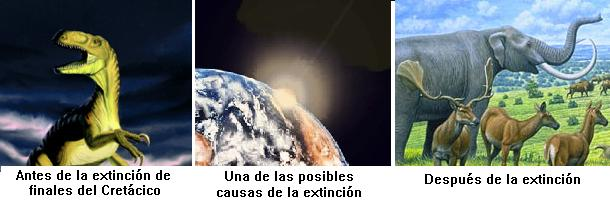En la actualidad, la alteración producida por los humanos a la ecósfera está causando una extinción masiva global.
Equilibrio Puntuado
La teoría del equilibrio puntuado es una inferencia sobre los procesos de macroevolución desde los patrones de especies presentes documentados en el registro fósil. En el registro fósil, la transición de una especie a otra es usualmente abrupta en la mayoría de las localidades geográficas - no se han encontrado formas transicionales. En conclusión, parece que las especies permanecen sin cambios por largos intervalos de tiempo y enseguida son reemplazadas por nuevas especies de forma rápida. Sin embargo, si se investigan amplios rangos las formas transicionales que unen las dos especies son algunas veces halladas en pequeñas áreas. Por ejemplo, en los braquiópodos del Jurásico del género Kutchithyris, K. acutiplacata aparece debajo de otras especies, K. euryptycha. Ambas especies fueron comunes y cubrieron un área geográfica amplia. Estas difieren lo suficiente como para que algunos hayan argumentado que deberían ubicarse en géneros diferentes. Los fósiles solo se encuentran en una pequeña localidad de aproximadamente 1.25 metros de capa sedimentaria. En la estrecha capa (10 cm.) que separa las dos especies, ambas especies son encontradas junto con formas transicionales. En otras localidades la distinción es bien marcada.
Eldredge y Gould propusieron que la mayoría de los principales cambios morfológicos ocurren (relativamente) rápidamente en pequeñas poblaciones de la periferia al momento de la especiación. Nuevas formas invadirán el rango de sus especies ancestrales. Entonces, en la mayoría de las localidades donde se encuentran los fósiles, la transición de una especie a otra parece abrupta. Este cambio abrupto reflejará remplazamiento por migración, no por evolución. En orden de encontrar los fósiles transicionales, debe encontrarse el área de la especiación.
Ha habido una considerable confusión sobre esta teoría. Algunas personas han llevado la impresión que el cambio abrupto en el registro fósil está indicando una evolución rápida; esto no es parte de la teoría.
El equilibrio puntuado ha sido presentado como una teoría jerárquica de la evolución. Los proponentes del equilibrio puntuado ven la especiación como algo análogo a la mutación, y la sustitución de una especie por otra como algo análogo a la selección natural. Esto es denominado selección de especies. La especiación añade nuevas especies al acervo de especies igual que la mutación añade nuevos alelos al acervo genético. Las tendencias evolutivas dentro de un grupo serían resultado de la selección entre especies, no de la selección natural actuando dentro de las especies. Esta es la parte más controversial de la teoría. Muchos biólogos están de acuerdo con el patrón de macroevolución que estos paleontólogos proponen, pero creen que la selección de especies ni siquiera ocurra teóricamente.
Los críticos argumentarían que la selección de especies no es análoga a la selección natural y que por tanto la evolución no es jerárquica. Además, el número de especies producidas a lo largo del tiempo es mucho menor que la cantidad de alelos diferentes que entran en los acervos genéticos a lo largo del tiempo. Por tanto, la cantidad de evolución adaptativa producida por la selección de especies (si realmente ocurrió) tendría que ser varios órdenes de magnitud menor que la evolución adaptativa dentro de las poblaciones producida por la selección natural.
Las pruebas del equilibrio puntuado han sido ambiguas. Se sabe desde hace mucho tiempo que los ritmos de evolución varían con el tiempo, eso no es controvertido. No obstante, los estudios filogenéticos están en conflicto con la cuestión de si hay una asociación clara entre especiación y cambio morfológico. Además, existen polimorfismos importantes dentro de algunas especies. Por ejemplo, el pez sol de branquias azules tiene dos tipos de macho. Uno es grande, de larga vida, protector de la pareja; el otro es un macho más pequeño, de vida más corta que se procura parejas furtivamente de entre las hembras protegidas por los machos grandes. La existencia de polimorfismos dentro de las especies demuestra que la especiación no es un requisito para el cambio morfológico considerable.
Una breve historia de la vida
Los biólogos que estudian la evolución hacen una variedad de cosas: los genetistas de poblaciones estudian los procesos que se dan mientras la evolución está ocurriendo; los sistemáticos buscan determinar el parentesco entre las especies, y los paleontólogos tratan de descubrir los detalles del desenvolvimiento de la vida en el pasado. Discernir estos detalles es con frecuencia difícil, pero se pueden realizar y comprobar nuevas hipótesis mientras van saliendo a la luz nuevas evidencias. Esta sección debe verse como la mejor hipótesis que los científicos tienen para la historia del planeta. El material presentado va desde algunas cuestiones sobre las que se tiene bastante certeza, hasta algunos temas que no son más que especulación informada. Para algunos puntos hay hipótesis contrarias — he intentado compilar un consenso. En general, cuanto más remota es la época, es más probable que la historia se encuentre incompleta o errada.
La vida evolucionó en el mar. Permaneció ahí durante la mayor parte de la historia de la Tierra.
La primera molécula replicadora fue probablemente el ARN. El ARN es un ácido nucleico parecido al ADN. En estudios de laboratorio se ha demostrado que algunas secuencias de ARN tienen capacidades catalíticas. Más importante aún, ciertas secuencias de ARN actúan como polimerasas — enzimas que forman hebras de ARN a partir de sus monómeros (N. del t. Un monómero es una de las partes que conforman un polímero. En el caso de los ácidos nucleicos los monómeros son los nucleótidos) Este proceso de autorreplicación es el paso crucial en la formación de la vida. Esto se conoce como la hipótesis del mundo de ARN.

Probablemente el ancestro común de toda la vida utilizó ARN como su material genético. Este ancestro dio lugar a tres linajes principales de la vida. Éstos son: los procariontes (bacterias “ordinarias”), las arqueobacterias (bacterias termófilas, metanógenas y halófilas) y los eucariontes. Los eucariontes incluyen a los protistas (organismos unicelulares como las amebas y las diatomeas y unas pocas formas multicelulares como el kelp), los hongos (incluyendo a las setas y las levaduras), las plantas y los animales. Los eucariontes y las arqueobacterias son los dos grupos más emparentados de los tres. El proceso de traducción (la fabricación de proteínas a partir de las instrucciones de una plantilla de ARN mensajero) es similar en los tres linajes, pero la organización del genoma y la transcripción (hacer ARN mensajero a partir de una plantilla de ADN) es muy diferentes en los procariontes comparados con los eucariontes y las arqueobacterias. La interpretación que los científicos hacen de esto es que el ancestro común estaba basado en el ARN; éste dio origen a dos linajes que independientemente formaron un genoma de ADN y por tanto desarrollaron independientemente mecanismos para transcribir el ADN en ARN.
Las primeras células tuvieron que ser anaeróbicas, porque no había oxígeno en la atmósfera. Además, probablemente eran termófilas (“amantes del calor”) y fermentativas. Existen rocas de hace 3.500 millones de años que contienen fósiles de procariontes. Específicamente, hay unas rocas en Australia, llamadas serie de Warrawoona, que aportan evidencia de comunidades bacterianas organizadas en estructuras llamadas estromatolitos. Fósiles como estos se han encontrado posteriormente por todo el mundo. Colonias de bacterias de este tipo aún se forman en algunos sitios (por ejemplo, en Shark Bay, Australia). Las bacterias son la única forma de vida encontrada en rocas muy, muy antiguas — los eucariontes (protistas) aparecen hace unos 1.500 millones de años, y formas parecidas a los hongos aparecen hace unos 900 millones de años.
La fotosíntesis evolucionó hace unos 3.400 millones de años. La fotosíntesis es un proceso que permite a los organismos utilizar la luz del sol para sintetizar azúcar a partir de precursores más simples. El primer fotosistema que evolucionó, el PSI, utiliza la luz para convertir dióxido de carbono (CO2) y sulfuro de hidrógeno (H2S) en glucosa. Este proceso libera sulfuro como producto de desecho. Cerca de mil millones de años después, un segundo fotosistema (PS) evolucionó, probablemente a partir de una duplicación del primer fotosistema. Los organismos con PSII usan ambos sistemas conjuntamente para convertir el dióxido de carbono (CO2) y el agua (H2O) en glucosa. Este proceso libera oxígeno como producto de desecho. La fotosíntesis anoxigénica (o H2S) utilizando el PSI se observa en bacterias púrpuras y verdes actuales. La fotosíntesis oxigénica (o H2O), utilizando el PSI y el PSII, tiene lugar en las cianobacterias. Las cianobacterias están estrechamente emparentadas con bacterias púrpuras ancestrales, y por tanto es plausible que evolucionaran a partir de ellas. Las bacterias verdes son un grupo aparte. Ya que las bacterias oxigénicas son un linaje dentro de un grupo de linajes anoxigénicos, los científicos deducen que el PSI evolucionó primero. Esto también está corroborado por la evidencia geológica.
Las plantas verdes y las algas usan también los dos fotosistemas. En estos organismos, la fotosíntesis ocurre en unos organelos (estructuras delimitadas por membranas dentro de la célula) llamados cloroplastos. Estos organelos se originaron como bacterias libres emparentadas con las cianobacterias, que fueron engullidas por células pre-eucariotas y finalmente entraron en una relación endosimbiótica. Esta teoría endosimbiótica de los orgánulos eucariontes fue defendida por Lynn Margulis. Esta teoría, originalmente controvertida, es aceptada en la actualidad. Una línea de evidencia clave que apoya esta teoría vino cuando se secuenció el ADN del interior de los cloroplastos - las secuencias genéticas eran más parecidas a las secuencias de las cianobacterias libres que a las secuencias de las plantas en las que los cloroplastos residían.
Tras el advenimiento del fotosistema II, se incrementaron los niveles de oxígeno. El oxígeno disuelto en los océanos se incrementó, lo mismo ocurrió con el oxígeno atmosférico. A esto se le conoce a veces como el holocausto del oxígeno. El oxígeno es muy buen receptor de electrones y puede ser muy dañino para los organismos vivos. Muchas bacterias son anaeróbicas y mueren casi instantáneamente ante la presencia de oxígeno. Otros organismos, como los animales, tienen maneras especiales para evitar el daño celular debido a este elemento (y, de hecho, requieren de él para vivir). Inicialmente, cuando el oxígeno comenzó a acumularse en el ambiente, fue neutralizado por los materiales presentes. El hierro, que existía en el mar en grandes concentraciones, se oxidó y precipitó. Se puede observar evidencia de esto en las formaciones en bandas de hierro de esa época, capas de hierro depositadas en el suelo marino. Como dijo un geólogo: “el mundo se oxidó”. Finalmente, alcanzó unas concentraciones suficientemente altas como para suponer un peligro para la vida. En respuesta, muchas especies se extinguieron, algunas continuaron (y continúan aún) prosperando en microentornos anaeróbicos y varios linajes desarrollaron independientemente la respiración del oxígeno.
Las bacterias púrpuras desarrollaron la respiración de oxígeno invirtiendo el flujo de moléculas de sus reacciones de fijación de carbono y modificando sus cadenas de transporte de electrones. Las bacterias púrpuras también permitieron al linaje eucarionte hacerse aeróbico. Las células eucarióticas tienen organelos rodeados por membranas denominados mitocondrias que se ocupan de la respiración de la célula. Estos organelos son endosimbiontes al igual que los cloroplastos. Las mitocondrias formaron esta relación simbiótica muy pronto en la historia de los eucariontes. Casi todos los grupos de células eucarióticas tienen mitocondrias. Luego, unos pocos linajes adquirieron cloroplastos. Los cloroplastos tienen múltiples orígenes. Las algas rojas adquirieron los pre-cloroplastos del linaje de las cianobacterias. Las algas verdes, el grupo del que evolucionaron las plantas, adquirieron distintos pre-cloroplastos de un proclorófito, un linaje estrechamente relacionado con las cianobacterias.

Los animales comenzaron a aparecer antes del Cámbrico, hace unos 600 millones de años. Los primeros animales, datados justo antes del Cámbrico, fueron encontrados en rocas cercanas a Adelaida, Australia. Se les llama fauna ediacariana, y posteriormente se han hallado también en otros lugares. No está claro si estas formas tienen algunos descendientes supervivientes. Algunos se parecen un poco a los cnidarios (medusas, anémonas y similares); otros se asemejan a los anélidos (lombrices de tierra). Todos los fila (la segunda mayor categoría taxonómica) de animales aparecieron alrededor del Cámbrico. La ‘explosión’ del Cámbrico puede haber sido el resultado de las altas concentraciones de oxígeno que permitieron la evolución de organismos con metabolismos superiores. O puede haberse debido a la aparición de mares de poca profundidad en esa época, proporcionando una variedad de nichos nuevos. En cualquier caso, la radiación produjo una amplia variedad de animales.
Algunos paleontólogos creen que en aquel entonces existían más filum de animales que ahora. Los animales de Burgess Shale son un ejemplo de animales fósiles del Cámbrico. Estos fósiles de Canadá muestran un extraño conjunto de criaturas, algunas de las cuales parecen tener diseños corporales únicos, nunca vistos en ningún animal del presente.
A menudo se exagera el alcance de la explosión cámbrica. Aunque fue rápida, la explosión cámbrica no es instantánea en el tiempo geológico. Igualmente hay evidencia de vida animal previa al Cámbrico. Además, aunque aparecieron todos los fila de animales, estos no eran las formas modernas que observamos hoy. Nuestro propio filum (que compartimos con los otros mamíferos, reptiles, aves, anfibios y peces) estaba representado por un organismo pequeño con forma de astilla llamada Pikaia. Las plantas aún no estaban presentes. Los protistas fotosintéticos y las algas eran la base de la cadena alimenticia. Después del Cámbrico, el número de familias marinas descendió a poco menos de 200.

Luego siguió la explosión del Ordovícico, hace unos 500 millones de años. Esta “explosión”, más grande que la del Cámbrico, introdujo numerosas familias de la fauna del Paleozoico (incluyendo a los crinoideos, los braquiópodos articulados, los cefalópodos y los corales). La fauna del Cámbrico (trilobites, braquiópodos inarticulados, etc.) declinó lentamente durante esta época. Al final del Ordovícico, la mayor parte de la fauna del Cámbrico había dado paso a la fauna del Paleozoico, y el número de familias marinas eran poco más de 400. En esos niveles permanecieron hasta el final del periodo Pérmico.
Las plantas evolucionaron a partir de las antiguas algas verdes hace unos 400 millones de años. Ambos grupos utilizan la clorofila a y b como pigmentos fotosintéticos. Además, las plantas y las algas verdes son los únicos grupos que almacenan almidón en sus cloroplastos. Las plantas y los hongos (en simbiosis) invadieron la tierra hace unos 400 millones de años. Las primeras plantas eran parecidas al musgo y requerían de ambientes húmedos para sobrevivir. Después, desarrollos evolutivos como una cutícula cérea permitieron a algunas plantas explotar ambientes tierra adentro. Los musgos aún carecen de tejido vascular verdadero para transportar fluidos y nutrientes. Esto limita su tamaño, ya que éstos deben distribuirse por la planta por difusión. Las plantas vasculares evolucionaron a partir de los musgos. La primera planta vascular terrestre conocida es Cooksonia, una estructura puntiaguda, ramificada sin hojas. Al mismo tiempo, o poco después, los artrópodos siguieron a las plantas hacia la tierra. Los primeros animales terrestres conocidos son los miriápodos — ciempiés y milpiés.

Los vertebrados entraron en tierra firme en el periodo Devónico, hace unos 380 millones de años. Ichthyostega, un anfibio, es uno de los primeros vertebrados terrestres conocidos. Fue encontrado en Groenlandia, y desciende de unos peces de aletas lobuladas llamados ripidistios. Los anfibios dieron lugar a los reptiles. Los reptiles habían desarrollado escamas para disminuir la pérdida de agua y un huevo con cascarón para poder empollar crías sobre la tierra. Entre los reptiles bien preservados más antiguos está Hylonomus, de rocas de Nueva Escocia.

La extinción del Pérmico fue la extinción más grande de la historia. Sucedió hace unos 250 millones de años. Se extinguieron los últimos animales de la fauna del Cámbrico. La fauna del Paleozoico cayó en picada de unas 300 familias a unas 50. Se estima que el 96% de todas las especies (50% de todas las familias) llegaron a su fin. Siguiendo a este evento, la fauna moderna, que se había estado expandiendo desde el Ordovícico, tomó el control.

La fauna moderna incluye a los peces, bivalvos, grastrópodos y cangrejos. Éstos apenas quedaron afectados por la extinción del Pérmico. La fauna moderna aumentó subsecuentemente hasta las más de 600 familias marinas actuales. La fauna del Paleozoico permaneció estable en unas 100 familias. Un segundo suceso de extinción, poco después del Pérmico, mantuvo baja la diversidad animal durante algún tiempo.
Durante el Carbonífero (el periodo justo anterior al Pérmico) y el Pérmico, el paisaje estaba dominado por los helechos y sus parientes. Tras la extinción del Pérmico, las gimnospermas (p. Ej. los pinos) llegaron a ser más abundantes. Las gimnospermas habían evolucionado semillas, a partir de sus antepasados helechos sin semilla, lo que ayudó a su habilidad para dispersarse. Las gimnospermas también desarrollaron polen, esperma encapsulado que les permitió un mayor cruzamiento.
Los dinosaurios evolucionaron a partir de los reptiles arcosaurios; sus parientes vivos más cercanos son los cocodrilos. Una modificación que pudo haber sido la clave de su éxito fue la evolución de una postura erecta. Los anfibios y reptiles tienen una postura acostada y caminan con un patrón de ondulaciones porque sus patas son aletas modificadas. Su forma de andar es una modificación del movimiento de natación de los peces. Los animales con postura acostada no pueden sostener una locomoción continuada porque no pueden respirar mientras se mueven; el movimiento de ondulación comprime su cavidad torácica. Por consiguiente deben detenerse cada unos pocos pasos y respirar antes de continuar por su camino. Los dinosaurios desarrollaron una postura erecta similar a la postura erecta que los mamíferos desarrollaron independientemente. Esto les permitía una locomoción continuada. Además, los dinosaurios evolucionaron de manera que llegaron a ser de sangre caliente. La capacidad de tener la sangre caliente permite un aumento en el vigor de los movimientos en los organismos erectos. Los organismos con postura acostada probablemente no se beneficiarían de la sangre caliente. Las aves evolucionaron a partir de dinosaurios saurisquios. Cladísticamente, las aves son dinosaurios. El fósil transicional Archaeopteryx tiene una mezcla de características reptilianas y aviares.

Las angiospermas evolucionaron a partir de las gimnospermas, y sus parientes más cercanos son las gnetofitas. Dos adaptaciones clave que les permitieron desplazar a las gimnospermas como flora dominante: los frutos y las flores. Los frutos (ovarios modificados de las planta) permiten la dispersión de las semillas basada en los animales junto con la deposición de éstas con una cantidad de fertilizante. Las flores evolucionaron para facilitar la dispersión del polen basada en animales, especialmente insectos. Los pétalos son hojas modificadas. Las angiospermas son hoy por hoy la flora dominante del mundo - más de tres cuartas partes de las plantas son angiospermas.
Los insectos evolucionaron a partir de artrópodos segmentados primitivos. Las partes de la boca de los insectos son patas modificadas. Los insectos están estrechamente emparentados con los anélidos. Los insectos dominan la fauna del mundo. Más de la mitad de todas las especies registradas son insectos. Un tercio de este número son escarabajos.
El final del Cretácico, hace unos 65 millones de años, está marcado por una extinción en masa menor. Esta extinción marcó el fallecimiento de todos los linajes de dinosaurios, excepto el de las aves. Hasta este punto, los mamíferos habían estado confinados a nichos nocturnos insectívoros. Una vez que los dinosaurios estuvieron fuera de escena, se diversificaron. Morganucodon, un contemporáneo de los dinosaurios, es un ejemplo de uno de los primeros mamíferos. Los mamíferos evolucionaron a partir de reptiles terápsidos. El reptil con una vela en la espalda Dimetrodon es un ejemplo de terápsido.
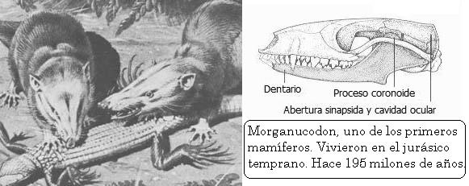Uno de los linajes de mamíferos más exitosos es, por supuesto, el de los humanos. Los humanos son simios neoténicos. La neotenia es un proceso que conduce a un organismo con capacidad reproductiva en su forma juvenil. La línea principal de evidencia de esto son las similitudes entre los simios jóvenes y los humanos adultos. Louis Bolk compiló una lista de 25 características compartidas entre los humanos adultos y los simios juveniles, incluyendo la morfología facial, un alto peso relativo del cerebro y la ausencia de arcos supraorbitales y crestas craneanas.

La Tierra ha estado en un estado de flujo durante 4.000 millones de años. A través de los tiempos la abundancia de linajes diferentes ha variado escabrosamente. Nuevos linajes evolucionan y radian por la faz del planeta, empujando a linajes más antiguos hacia la extinción, o a una existencia relictual en refugios protegidos o microhábitats convenientes. Los organismos modifican su ambiente. Esto puede ser desastroso, como en el caso del holocausto del oxígeno. Sin embargo, la modificación ambiental puede ser el impulso de más cambio evolutivo. En términos generales, la diversidad ha aumentado desde el comienzo de la vida. Sin embargo, el aumento se interrumpe numerosas veces por las extinciones en masa. Parece que la diversidad alcanzó un récord de todos los tiempos justo antes de la aparición de los humanos. Mientras la población humana se ha incrementado, la diversidad biológica ha disminuido a un ritmo constante. Probablemente la correlación sea causal.

Posición científica de la Evolución y sus críticos

La teoría de la evolución y la descendencia común fueron alguna vez controversiales en los círculos científicos. Este ya no es el caso. Los debates continúan sobre varios aspectos evolutivos. Por ejemplo, no se han conocido todos los detalles de los patrones de parentesco. Sin embargo, la evolución y la descendencia común se consideran hechos por la comunidad científica.
El creacionismo científico es 100% embuste. Los llamados “científicos” creacionistas no basan sus objeciones en razonamientos científicos o en datos. Sus ideas están basadas en dogmas religiosos, y su acercamiento es simplemente para atacar la evolución. El tipo de argumentos que usan caen en diversas categorías: distorsión de principios científicos (el argumento de la segunda ley de la termodinámica), versiones de “hombre de paja” de la evolución (el argumento de “demasiado improbable para que evolucione por azar”), selección deshonesta de datos (el argumento de la disminución de la velocidad de la luz), apelar a las emociones o el pensamiento que recurre al deseo (“Yo no quiero estar emparentado con un simio”) o apelar a la incredulidad de las personas (“Yo no veo como esto podría haber evolucionado”), citar deshonestamente a científicos sacándolos de contexto (Los comentarios de Darwin sobre la evolución del ojo) y simplemente fabricando datos para sostener sus argumentos (Las proteínas de sapo de Gish)
(Los enlaces anteriormente señalados están en inglés)

Más importante aún, los científicos creacionistas no tienen una teoría comprobable con la cual reemplazar la evolución. Aún si la evolución resultase estar errada, esta podría reemplazarse por otra teoría científica. Los creacionistas no conducen experimentos científicos, no solicitan publicación en journals científicos con comité de revisión. La mayoría de sus logros consisten en “predicar al populacho”.
El argumento persuasivo de los creacionistas no es científico - apelar al juego limpio. “¿Por qué no podemos presentar ambos lados del argumento?”, preguntan. La respuesta es no. Lo correcto es excluir el creacionismo de los cursos de ciencias de las escuelas públicas. Los científicos han estudiado y probado la evolución por 150 años. Hay voluminosa evidencia de esto. Dentro de la comunidad científica no hay teorías compitiendo. Mientras que los científicos creacionistas no propongan una teoría científica y la sometan a comprobación, no tienen derecho a demandar tiempo igual en las clases de ciencias para presentar sus ideas. La evolución ha merecido un lugar en el currículo de ciencias. El creacionismo no.
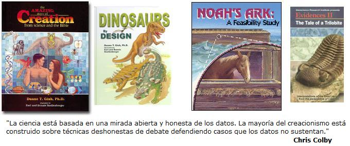La ciencia está basada en una mirada abierta y honesta de los datos. La mayoría del creacionismo está construido sobre técnicas deshonestas de debate defendiendo casos que los datos no sustentan. La ciencia pertenece a las clases de ciencia. La evolución es ciencia, el creacionismo no. Así de simple.
El ataque creacionista sobre la educación pública significa que los educandos están perdiendo la posibilidad de aprender la teoría más poderosa y elegante de la biología. Los políticos son complacientes para permitir que personas científicamente ignorantes, pero políticamente fuertes arruinen el sistema educativo a cambio de votos. Las personas interesadas en la evolución, y la enseñanza de las ciencias en general, necesita vigilar atentamente las elecciones de las juntas educativas. En diferentes regiones se han elegido candidatos “secretamente” creacionistas. Afortunadamente muchos han cambiado su voto una vez que sus intenciones se han hecho manifiestas.
La mayoría de los americanos son religiosos, pero solo una minoría son fanáticos religiosos. La versión que la religión de línea dura quiere imponer en América es tan repulsiva a la mayoría de cristianos de las principales ramas del cristianismo como a los miembros de otras religiones, al igual que a los ateos y agnósticos. La mayoría de las personas informadas en religión no ven razones para que las teorías y los hechos biológicos interfieran con sus creencias religiosas.

La importancia de la Evolución en Biología
Nada en biología tiene sentido excepto en la luz de la evolución
—Theodosius Dobzhansky
Se ha denominado a la evolución la piedra angular de la biología, y por buenas razones. Es posible hacer investigación en biología con poco o ningún conocimiento de evolución. La mayoría de los biólogos la hacen. Pero, sin evolución, la biología se convierte en un disparatado conjunto de campos. Las explicaciones evolutivas se despliegan por todos los campos de la biología y los agrupa todos bajo una sombrilla teórica.
Sabemos, por la teoría microevolutiva, que la selección natural optimiza la variabilidad genérica existente en una población para maximizar el éxito reproductivo. Esto proporciona una estructura para la interpretación de una gran variedad de características biológicas y su importancia relativa. Por ejemplo, una señal con la intención de atraer a una pareja puede ser interceptada por depredadores. La selección natural ha causado una relación entre la atracción de parejas y el ser presa de un depredador. Si usted asume que algo más que el éxito reproductivo es optimizado, muchas cosas en biología tendrían poco sentido. Sin la teoría de la evolución, las estrategias de la historia de la vida serían pobremente comprendidas.
La teoría macroevolutiva también ayuda a explicar muchas cosas sobre cómo funcionan los seres vivos. Los organismos son modificados al transcurrir el tiempo por selección natural acumulada. Los numerosos ejemplos de diseño improvisado en la naturaleza son un resultado directo de esto. La distribución de las características con base genética en los grupos se explica por la separación de linajes y la producción continua de nuevas características por mutación. Las características están restringidas a los linajes en los que aparecen.
También los detalles del pasado tienen un gran poder explicativo en biología. Las plantas obtienen su carbono uniendo el gas dióxido de carbono a una molécula orgánica en el interior de sus células. Esto se conoce como fijación del carbono. La enzima que fija el carbono es la RuBP carboxilasa. Las plantas que utilizan la fotosíntesis C3 pierden de 1/3 a 1/2 del dióxido de carbono que fijaron originalmente. La RuBP carboxilasa funciona bien en ausencia de oxígeno, pero pobremente en presencia de él. Esto se debe a que la fotosíntesis evolucionó cuando había poco oxígeno gaseoso presente. Después, cuando el oxígeno llegó a ser más abundante, la eficiencia de la fotosíntesis decreció. Los organismos fotosintéticos lo compensaron produciendo más cantidad de ésta enzima. La RuBP carboxilasa es la proteína más abundante del planeta, debido parcialmente a que es una de las menos eficientes.
Los ecosistemas, las especies, los organismos y sus genes tienen largas historias. Una explicación completa de cualquier característica biológica debe tener dos componentes. Primero, una explicación proximal — ¿cómo funciona? Y, segundo, una explicación última — ¿a partir de qué fue modificado? Por centurias, los humanos se han preguntado: “¿Por qué estamos aquí?”. La respuesta a esa pregunta está fuera del ámbito de la ciencia. Sin embargo, los biólogos pueden ofrecer una elegante respuesta a la pregunta: “¿Cómo llegamos aquí?”

Algunos libros Sobre Biología y Evolución
Evolutionary Biology, by Douglas Futuyma, 1986, Sinauer, Sunderland,Mass
Evolution, by Mark Ridley, 1993, Blackwell Scientific, Boston
Principles of Population Genetics, by Hartl and Clark , 1989, Sinauer,Sunderland, Mass
Introduction to Population Genetics Theory, by Crow and Kimura, 1970, Burgess Publishing Company, Edina, Minnesota
Fundamentals of Molecular Evolution, by Li and Graur, 1991, Sinauer, Sunderland, Mass
The Genetic Basis of Evolutionary Change, by Richard Lewontin, 1974, Columbia University Press, New York
The Causes of Molecular Evolution, by John Gillespie, 1991, Oxford University Press, New York
Non-Neutral Evolution, edited by Brian Golding, 1994, Chapman and Hall, Boston
The Neutral Theory of Molecular Evolution, by Motoo Kimura, 1983, Cambridge University Press, Cambridge
Natural Selection in the Wild, by John Endler, 1986, Princeton University Press, Princeton, New Jersey
Macroevolutionary Dynamics, by Niles Eldredge, 1989, McGraw- Hill, New York
History of Life, by Richard Cowen, 1990, Blackwell Scientific, Boston
The Blind Watchmaker, by Richard Dawkins, 1987, Norton, New York
Abusing Science, by Philip Kitcher, 1982, MIT, Cambridge, Mass
The Diversity of Life, by E. O. Wilson, 1992, Harvard Belknap, Cambridge, Mass.
The Origin of Species, by Charles Darwin, 1859
Descent of Man, by Charles Darwin, 1871
The Causes of Evolution, by J. B. S. Haldane, 1932 (reprinted 1990, Princeton University Press, Princeton, New Jersey)
Tempo and Mode in Evolution, by G. G. Simpson, 1944, Columbia University Press, New York
The Growth of Biological Thought, by Ernst Mayr, 1982, Harvard Belknap, Cambidge, Mass.
The Origins of Theoretical Population Genetics, by William B. Provine, 1971, University of Chicago Press, Chicago
Apéndice
Parte uno: Tiempo geológico
Millones de años atrás
Tiempo Precámbrico
Era Arcaica: 4600-2500
Era Proterozoica: 2500-570
Tiempo Fanerozoico
-
Era Paleozoica
Periodo Cámbrico: 570-505
Periodo Ordovícico: 505-438
Periodo Silúrico: 438-408
Periodo Devónico: 408-360
Periodo Carbonífero: 360-286
Periodo Pérmico: 286-245
-
Era Mesozoica
Periodo Triásico: 245-208
Periodo Jurásico: 208-144
Periodo Cretácico: 144-66,4
-
Era Cenozoica
-
Periodo Terciario
Paleoceno: 66,4-57,8
Eoceno: 57,8-38,6
Oligoceno: 38,6-23,7
Mioceno: 23.7-5.3
Plioceno: 5,3-1,6
-
Periodo Cuaternario
Pleistoceno: 1,6-0,01
Holoceno: 0,01-0
-
Parte dos: Filogenia universal
![[Árbol filogenético de la vida]](800px-Phylogenetic_tree-es.png)
Fuente: Wikipedia

TalkOrigins Archive por http://talkorigins.org se distribuye bajo una Licencia Creative Commons Atribución-CompartirIgual 4.0 Internacional.
Volver a la sección Ciencias de los orígenes
Comentarios
Comments powered by Disqus